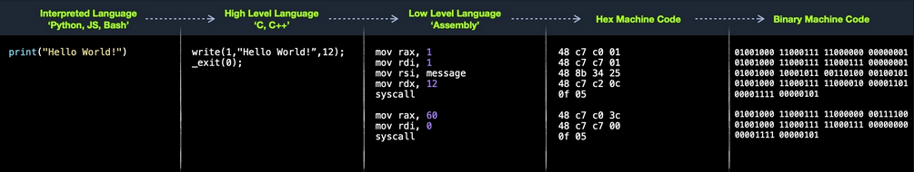
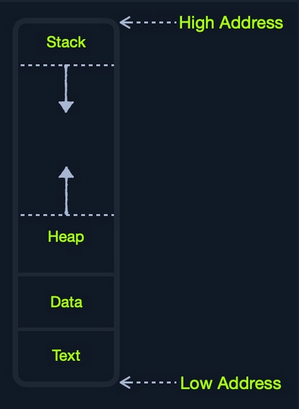
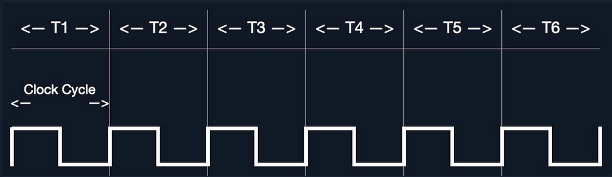
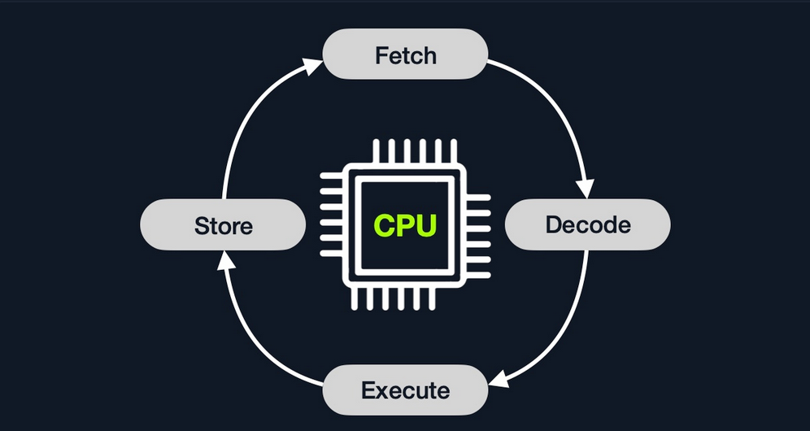
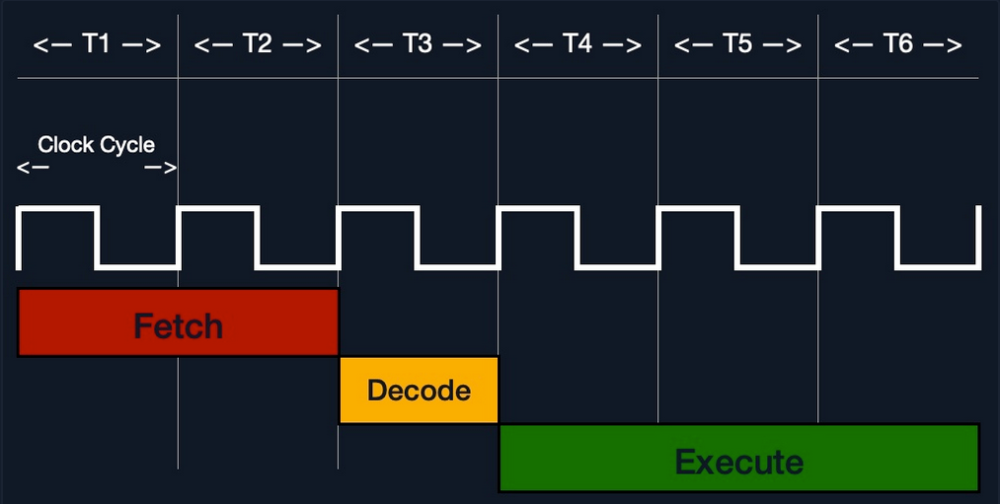
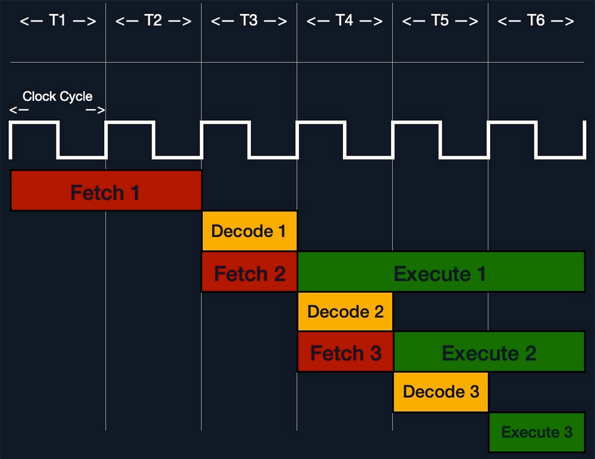
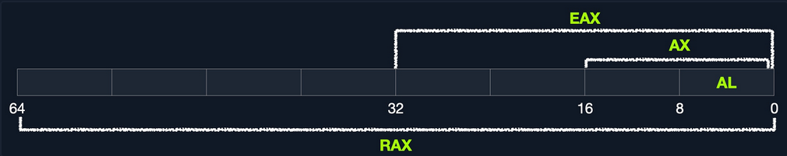
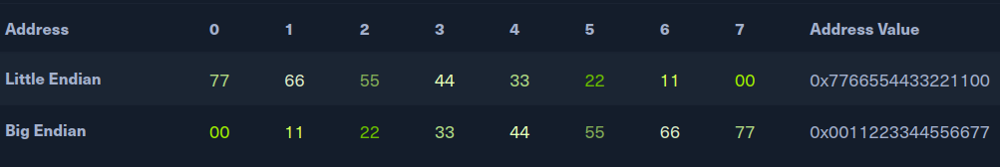
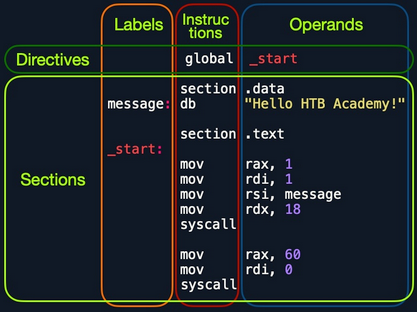

- Assembly
- Architecture
- Computer Architecture
- CPU Architecture
- Instruction Set Architecture (ISA)
- Registers, Addresses, and Data Types
- Assembling & Debugging
- Basic Instructions
- Control Instructions
- Functions
- Shellcodes
- Shellcoding Techniques
- Shellcode Tools
Assembly
Architecture
Assembly Language
Most of your interaction with your personal computers and smartphones is done through the OS and other applications. These applications are usually developed using high-level languages. You also know that each of these devices has a core processor that runs all of the necessary processes to execute systems and applications, along with Random Access Memory, Video Memory, and other similar components.
However, these physical components cannot interpret or understand high-level languages, as they can essentially only process 1s and 0s. This is where Assembly language comes in, as a low-level language that can write direct instructions the processor can understand. Since the processor can only process binary data, it would be challenging for humans to interact with processors without referring to manuals to know which hex code runs which instruction.
This is why low-level assembly languages were built. By using Assembly, developers can write human-readbale machine instructions, which are then assembled into their machine code equivalent, so that the processor can directly run them. This is why some refer to Assembly language as symbolic machine code.
Machine code is often represented as Shellcode, a hex representation of machine code bytes. Shellcode can be translated back to its Assembly counterpart and can also be loaded directly into memory as binary instructions to be executed.
High-Level vs. Low-Level
As there are different processor designs, each processor understands a different set of machine instructions and a different Assembly language. In the past, applications had to be written in assembly for each processor, so it was not easy to develop an application for multiple processors. In the early 1970's, high-level languages were developed to make it possible to write a single easy to understand code that can work on any processor without rewriting it for each processor. To be more specific, this was made possible by creating compilers for each language.
When high-level code is compiled, it is translated into assembly instructions for the processor it is being compiled for, which is then assembled into machine code to run on the processor. This is why compilers are built for various languages and various processors to convert the high-level code into assembly code and then machine code that matches the running processor.
Later on, interpreted languages were developed, which are usually not compiled but are interpreted during run time. These types of languages utilize pre-built libraries to run their instructions. These libraries are typically written and compiled in other high-level languages like C or C++. So when you issue a command in an interpreted language, it would use the compiled library to run that command, which uses its assembly code/machine code to perform all the instructions necessary to run this command on the processor.
Compilation Stages

Computer Architecture
Today most modern computers are built on the Von Neumann Architecture, which was developed back in 1945 by Von Neumann to enable the creation of "General Purpose Computers".
This architecture executes machine code to perform specific algorithms. It mainly consists of the following elements:
- Central Processing Unit (CPU)
- Memory Unit
- Input/Output Devices
- Mass Storage Unit
- Keyboard
- Display
The CPU itself consists of:
- Control Unit (CU)
- Arithmetic/Logic Unit (ALU)
- Registers
Assembly languages mainly work with the CPU and memory.
Memory
A computer's memory is where the temporary data and instructions of currently running programs are located. A computer's memory ism also known as Primary Memory. It is the primary location the CPU uses to retrieve and process data. It does so very frequently, so the memory must be extremely fast in storing and retrieving data and instructions.
Two main types of memory:
- Cache
- Random Access Memory (RAM)
Cache
... memory is usually located within the CPU itself and hence is extremely fast compared to RAM, as it runs at the same clock speed as the CPU. However, it is very limited in size and very sophisticated, and expensive to manufacture due to it being so close to the CPU.
Since RAM clock speed is usually much slower than the CPU cores, in addition to it being far from the CPU, if a CPU hat to wait for the RAM to retrieve each instruction, it would effectivley be running at much lower clock speeds. This is the main benefit of cache memory. It enables the CPU to access the upcoming instructions and data quicker than retrieving them from RAM.
There are usually three levels of cache memory, depending on their closeness to the CPU core:
| Level | Description |
|---|---|
| Level 1 Cache | usually in kilobytes, the fastest memory available, located in each CPU core |
| Level 2 Cache | usually in megabytes, extremely fast, shared between all CPU cores |
| Level 3 Cache | usually in megabytes, faster than RAM but slower than L1/L2 |
RAM
... is much larger than cache memory, coming in sizes ranging from gigabytes up to terabytes. RAM is also located far away from the CPU cores and is much slower than cache memory. Accessing data from RAM addresses takes many more instructions.
For example, retrieving an instruction from the registers takes only one clock cycle, and retrieving it from the L1 cache takes a few cycles, while retrieving it from RAM takes around 200 cycles. When this is done billions of times in a second, it makes a massive difference in the overall execution speed.
In the past, with 32-bit addresses, memory addresses were limited from 0x00000000 to 0xffffffff. This meant the maximum possible RAM size was 2^32 bytes, which is only 4 gigabytes, at which point you run out of unique addresses. With 64-bit addresses, the range is now up to 0xffffffffffffffff, with a theoretical maximum RAM size of 2^64, which is around 18.5 exabytes, so you shouldn't be running out of memory addresses anytime soon.
When a program is run, all of its data and instructions are moved from the storage unit to the RAM to be accessed when needed by the CPU. This happens because accessing them from the storage unit is much slower and will increase data processing time. When a program is closed, its data is removed or made availabe to re-use from the RAM.
The RAM is split into four main segments:

| Segment | Description |
|---|---|
| Stack | has a last-in-first-out design and is fixed in size; data in it can only be accessed in a specific order by pushing and popping data |
| Heap | has a hierachical design and is therefore much larger and more versatile in storing data, as data can be stored and retrieved in any order; however, this makes the heap slower than the stack |
| Data | has two parts: 1) data, which is used to hold variables and 2) .bss, which is used to hold unassigend variables |
| Text | main assembly instructions are loaded into this segment to be fetched and executed by the CPU |
Although this segmentation applies to the entire RAM, each application is allocated its Virtual Memory when it is run. This means that each application would have its own stack, heap, data, text segments.
IO/Storage
... like the keyboard, the screen, or the long-term storage unit, also known as Secondary Memory. The processor can access and control IO devices using Bus Interfaces, which act as 'highways' to transfer data and addresses, using electrical charges for binary data.
Each bus has capacity of bits it can carry simultaneously. This usually is a multiple of 4-bits, ranging up to 128-bits. Bus interfaces are also usually used to access memory and other components outside the CPU itself.
Unlike primary memory that is volatile and stores temporary data and instructions as the programs are running, the storage unit stores permanent data, like the OS files or entire applications and their data.
The storage unit is the slowest to access. First, because they are the farthest away from the CPU, accessing them through bus interfaces like SATA or USB takes much longer to store and retrieve the data. They are also slower in their design to allow more data storage. As long as there is more data to go through, they will be slower.
SSDs utilize a similar design to RAMs, using non-volatile circuitry that retains data even without electricity. This made storage units much faster in storing and retrieving data. Still, since they are far away from the CPU and connected through special interfaces they are the slowest unit to access.
Speed
| Component | Speed | Size |
|---|---|---|
| Registers | fastest | Bytes |
| L1 Cache | fastest, other than Registers | Kilobytes |
| L2 Caches | very fast | Megabytes |
| L3 Caches | fast, but slower than the above | Megabytes |
| RAM | much slower than all of the above | Gigabytes-Terabytes |
| Storage | slowest | Terabytes and more |
CPU Architecture
The CPU is the main processing unit wihtin a computer. The CPU contains both the Control Unit, which is in charge of moving and controlling data, and the Arithmetic/Logic Unit, which is in charge of performing various arithmetics and logical calculations as requested by a program through the assembly instructions.
The manner in which and how efficiently a CPU processes its instructions depends on its Instruction Set Architecture (ISA). There are multiple ISAs in the industry, each having its way of processing data. RISC architecture is based on processing more simple instructions, which takes more cycles, but each cycle is shorter and takes less power. The CISC architecture is based on fewer, more complex instructions, which can finish the requested instructions in fewer cycles, but each instruction takes more time and power to be processed.
Clock Speed & Clock Cycle
Each CPU has a clock speed that indicates its overall speed. Every tick of the clock runs a clock cycle that processes a basic instruction, such as fetching an address or storing an address. Specifically, this is done by the CU or ALU.
The frequency in which the cycles occur is counted is cycles per second (Hertz). If a CPU has a speed of 3.0 GHz, it can run 3 billion cycles every second (per core).

Modern processors have a multi-core design, allowing them to have multiple cycles at the same time.
Instruction Cycle
... is the cycle it takes the CPU to process a single machine instruction.

An instruction cycle consists of four stages: fetch, decode, execute, and store:
| Instruction | Description |
|---|---|
| 1. Fetch | takes the next instruction's address from the Instruction Address Register (IRA), which tells it where the next instruction is located |
| 2. Decode | takes the instruction from the IAR, and decodes it from binary to see what is required to be executed |
| 3. Execute | fetch instruction operands from register/memory, and process the instruction in the ALU or CU |
| 4. Store | Store the new value in the destination operand |
Each Instruction Cycle takes multiple clock cycles to finish, depending on the CPU architecture and the complexity of the instruction. Once a single instruction cycle ends, the CU increments to the next instruction and runs the same cycle on it, and so on.

For example, if you were to execute the assembly instruction add rax, 1, it would run through an instruction cycle:
- Fetch the instruction from the
ripregister,48 83 C0 01(in binary). - Decode '
48 83 C0 01' to know it needs to perform anaddof1to the value atrax. - Get the current value at
rax(byCU), add1to it (by theALU). - Store the new value back to
rax.
In the past, processors used to process instructions sequentially, so they had to wait for one instruction to finish to start the next. On the other hand, modern processors can process multiple instructions in parallel by having multiple instruction/clock cycles running at the same time. This is made possible by having a multi-thread and multi-core design.

Processor Specific
Each processor understands a different set of instructions. For example, while an Intel processor based on the 64-bit x86 architecture may interpret the machine code 4883C001 as add rax, 1, ARM processor translates the same machine code as the biceq r8, r0, r8, asr #6 instruction.
This is because each processor type has a different low-level assembly language architecture known as Instruction Set Architectures (ISA). For example, the add instruction seen above, add rax, 1, is for Intel x86 64-bit processors. The same instruction written for the ARM processor assembly language is represented as add r1, r1, 1.
It is important to understand that each processor has its own set of instructions and corresponding machine code.
Furthermore, a single Instruction Set Architecture may have several syntax interpretations for the same assembly code. For example, the above add instruction is based on the x86 architecture, which is supported by multiple processors like Intel, AMD, and legacy AT&T processors. The instruction is written as add rax, 1 with intel syntax, and written as addb $0x1, %rax with AT&T syntax.
Even though you can tell that both instructions are similar and do the same thing, their syntax is different, and the location of the source and destination operands are swapped as well. Still, both codes assemble the same machine code and perform the same instruction.
If you want to know whether your Linux system supports x86_64 architecture, you can use the lscpu command:
d41y@htb[/htb]$ lscpu
Architecture: x86_64
CPU op-mode(s): 32-bit, 64-bit
Byte Order: Little Endian
<SNIP>
Instruction Set Architecture (ISA)
... specifies the syntax and semantics of the assembly language on each architecture. It is not just a different syntax but is built in the core of a processor, as it affects the way and order instructions are executed and their level of complexity. ISA mainly consists of the following components:
- Instructions
- Registers
- Memory Addresses
- Data Types
| Component | Example | Description |
|---|---|---|
| Instructions | add rax, 1, mov rsp, rax, push rax | the instruction to be processed in the opcode operand_list format; there are usually 1, 2, or 3 comma-separated operands |
| Registers | rax, rsp, rip | used to store operands, addresses, or instructions temporarily |
| Memory Addresses | 0xffffffffaa8a25ff, 0x44d0, $rax | the address in which data or instructions are atored; may point to memory or registers |
| Data Types | byte, word, double word | the type of data stored |
There are two main Instruction Set Architectures:
- Complex Instruction Set Computer (CISC)
- used in Intel and AMD processors in most computers and servers
- Reduced Instruction Set Computer (RISC)
- used in ARM and Apple processors, in most smartphones, and some laptops
CISC
... architecture was one of the earliest ISA's ever developed. It favors more complex instructions to be run at a time to reduce the overall number of instructions. This is done to rely as much as possible on the CPU by combining minor instructions into more complex ones.
Suppose you were to add two registers with the add rax, rbx instruction. In that case, a CISC processor can do this in a single 'Fetch-Decode-Execute-Store' cycle, without having to split into multiple instructions to fetch rax, then fetch rbx, then add them, and then store them in rax, each of which would take its own 'Fetch-Decode-Execute-Store' cycle.
Two main reasons:
- To enable more instructions to be executed at once by designing the processor to run more advanced instructions in its core.
- In the past, memory and transistors were limited, so it was preferred to write shorter programs by combining multiple instructions into one.
To enable the processors to execute complex instructions, the processor's design becomes more complicated, as it is designed to execute a vast amount of different complex instructions, each of which has its own unit to execute it.
Furthermore, even though it takes a single instruction cycle to execute a single instruction, as the instructions are more complex, each instruction cycle takes more clock cycles. This fact leads to more power consumption and heat to execute each instruction.
RISC
... favors splittin instructions into minor instructions, and so the CPU is designed only to handle simple instructions. This is done to relay the optimization to the software by writing the most optimized Assembly code.
The same previous add r1, r2, r3 instruction on a RISC processor would fetch r2, then fetch r3, add them, and finally store them in r1. Every instruction of these takes an entire 'Fetch-Decode-Execute-Store' instruction cycle, which leads to a larger number of total instructions per program, and hence a longer Assembly code.
By not supporting various types of complex instructions, RISC processors only support a limited number of instructions (~200) compared to CISC processors (~1500). So, to execute complex instructions, this has to be done through a combination of minor instructions through Assembly.
An advantage of splitting complex instructions into minor ones is having all instructions of the same length either 32-bit or 64-bit long. This enables designing the CPU clock speed around the instruction length so that executing each stage in the instruction cycle would always take precisely one machine clock cycle.
Executing each instruction stage in a single clock cycle and only executing simple instructions leads to RISC processors consuming a fraction of the power consumed by CISC processors, which makes these processors ideal for devices that run on batteries, like smartphones or laptops.
CISC vs RISC
| Area | CISC | RISC |
|---|---|---|
| Complexity | favors complex instructions | favors simple instructions |
| Length of instructions | longer instructions - variable length 'mulitple of 8 bits' | shorter instructions - fixed length '32-bit/64-bit' |
| Total instructions per program | fewer total instructions - shorter code | more total instructions - longer code |
| Optimization | relies on hardware optimization (in CPU) | relies on software optimization (in Assembly) |
| Instruction Execution Time | variable - mulitple of clock cycles | fixed - one clock cycle |
| Instructions supported by CPU | many instructiosn (~1500) | fewer instructions (~200) |
| Power Consumption | high | very low |
| Examples | Intel, AMD | ARM, Apple |
Registers, Addresses, and Data Types
Registers
Each CPU has a set of registers. The registers are the fastest components in any computer, as they are built within the CPU core. However, registers are very limited in size and can only hold a few bytes of data at a time.
There are two main types of registers:
| Data Registers | Pointer Registers |
|---|---|
rax | rbp |
rbx | rsp |
rcx | rip |
rdx | |
r8 | |
r9 | |
r10 |
- Data Registers
- are usually used for storing instructions/syscall arguments
- primary data registers are:
raxrbxrcxrdxrdi, but usually for the instruction destinationrsi, but usually for the instruction source
- secondary registers, that can be used when all previous registers are in use:
r8r9r10
- Pointer Registers
- used to store specific important address pointers
- main pointer registers:
- Base Stack Pointer
rbp, which points to the beginning of the Stack - Current Stack Pointer
rsp, which points to the current location within the Stack - Instruction Pointer
rip, which holds the address of the next instruction
- Base Stack Pointer
Sub-Registers
Each 64-bit register can be further divided into smaller sub-registers containing the lower bits, at ony byte 8-bits, 2 bytes 16 bits, and 4 bytes 32 bits. Each sub-register can be used and accessed on its own, so you don't have to consume the full 64-bits if you have a smaller amount of data.

Sub-registers can be accessed as:
| Size in bits | Size in bytes | Name | Example |
|---|---|---|---|
| 16-bit | 2 byte | the base name | ax |
| 8-bit | 1 byte | base name and/or ends with 'l' | ax |
| 32-bit | 4 byte | base name + starts with the 'e' prefix | eax |
| 64-bit | 8 byte | base name + starts with the 'r' prefix | rax |
Take a look: All Sub-Registers for all the essential registers in an x86_64 architecture
Memory Addresses
x86 64-bit processors have 64-bit wide addresses that range from 0x0 to 0xffffffffffffffff, so you expect the addresses to be in this range. However, RAM is segmented into various regions, like the Stack, the heap, and other program and kernel-specific regions. Each memory region has specific read, write, execute permissions that specify whether you can read from it, write to it, or call an address in it.
Whenever an instruction goes through the Instruction Cycle to be executed, the first step is to fetch the instruction from the address it's located at. There are several types of address fetching in the x86 architecture.
| Addressing Mode | Description | Example |
|---|---|---|
| Immediate | the value is given within the instruction | add 2 |
| Register | the register name that holds the value is given in the instruction | add rax |
| Direct | the direct full address is given in the instruction | call 0xffffffffaa8a25ff |
| Indirect | a reference pointer is given in the instruction | call 0x44d000 or call [rax] |
| Stack | address is on top of the stack | add rsp |
note
The less immediate the value is, the slower it is to fetch!
Address Endianness
... is the order of its bytes in which they are stored or retrieved from memory. There are two types of endianness: Little-Endian and Big-Endian. With Little-Endian processors, the little-end byte of the address is filled/retrieved first right-to-left, while with Big-Endian processors, the big-end byte is filled/retrieved first left-to-right.
If you have the address 0x0011223344556677 to be stored in memory, little-endian processors would store the 0x00 byte on the right-most bytes, and then the 0x11 byte would be filled after it, so it becomes 0x1100, and then the 0x22 byte, so it becomes 0x221100, and so on. Once all bytes are in place, they would look like 0x7766554433221100, which is the reverse of the original value. Of course, when retrieving the value back, the processor will also use little-endian retrieval, so the value retrieved would be the same as the original value.
Another example that shows how this can affect the stored values in binary. If you had the 2-byte integer 426, its binary representation is 00000001 10101010. The order in which these two bytes are stored would change its value. If you stored it in reverse as 10101010 00000001, its value becomes 43521.
The big-endian processors would store these bytes as 00000001 10101010 left-to-right, while little-endian processors store them as 10101010 00000001 right-to-left. When retrieving the value, the processor has to use the same endianness used when storing them, or it will get the wrong value. This indicates that the order in which the bytes are stored/retrieved makes a big difference.

note
Little-endian byte order is used with Intel/AMD x86 in most modern OS, so the shellcode is always represented right-to-left.
Data Types
The x86 architecture supports many types of data sizes, which can be used with various instructions. The following are the most common data types:
| Component | Length | Example |
|---|---|---|
| byte | 8 bits | 0xab |
| word | 16 bits - 2 bytes | 0xabcd |
| double word (dword) | 32 bits - 4 bytes | 0xabcdef12 |
| quad word (qword) | 64 bits - 8 bytes | 0xabcdef1234567890 |
important
Whenever you use a variable with a certain data type or use a data type with an instruction, both operands should be of the same size.
For example, you can't use a variable defined as byte with rax, as rax has a size of 8 bytes. In this case, you would have to use al, which has the same size of 1 byte.
| Sub-Register | Data Type |
|---|---|
al | byte |
ax | word |
eax | dword |
rax | qword |
Assembling & Debugging
Assembly File Structure
global _start
section .data
message: db "Hello HTB Academy!"
section .text
_start:
mov rax, 1
mov rdi, 1
mov rsi, message
mov rdx, 18
syscall
mov rax, 60
mov rdi, 0
syscall
This Assembly code should print the string "Hello HTB Academy!" to the screen.
First, examine the way the code is distributed:

Looking at the vertical parts of the code, each line can have three elements:
- Labels
- each label can be referred to by instructions or by directives
- Instructions
- Operands
Next, if you look at the code line-by-line, you see three main parts:
global _start- is a directive that directs the code to start executing at the
_startlabel defined below
- is a directive that directs the code to start executing at the
section .data- is the data section, which should contain all of the variables
section .text- is the text section containing all of the code to be executed
Both the .data and .text sections refer to the data and text memory segments, in which these instructions will be stored.
Directives
An Assembly code is line-based, which means that the file is processed line-by-line, executing the instruction of each line. You see at the first line a directive global _start, which instructs the machine to start processing the instructions after the _start label. So, the machine goes to the _start label and starts executing the instructions there, which will print the message on the screen.
Variables
The data section holds your variable to make it easier for you to define variables and reuse them without writing them multiple times. Once you run your program, all of your variables will be loaded into memory in the data segment.
When you run the program, it will load any variables you have defined into memory so that they will be ready for usage when you call them.
You can define variables using db for a list of bytes, dw for a list of words, dd for a list of digits, and so on. You can also label any of your variables so you can call it or reference it later. The following are some examples of defining veriables:
| Instruction | Description |
|---|---|
db 0x0a | defines the byte 0x0a, which is a new line |
message db 0x41, 0x42, 0x43, 0x0a | defines the label message => abc\n |
message db "Hello World!", 0x0a | defines the label message => Hello World!\n |
Furthermore, you can use the equ instruction with the $ token to evaluate an expression, like the length of a defined variable's string. However, the labels defined with the equ instruction are constants, and they cannot be changed later.
For example, the following code defines a variable and then defines a constant for its length.
section .data
message db "Hello World!", 0x0a
length equ $-message
Code
The second section is the .text section. This section holds all of the Assembly instructions and loads them to the text memory segment. Once all instructions are loaded into the text segment, the processor starts executing them one after another.
The default convention is to have the _start label at the beginning of the .text section, which starts the main code that will be executed as the program runs.
The text segment within the memory is read-only, so you cannot write any variables within it. The data section, on the other hand, is read/write, which is why we write your variables to it. However, the data segment within the memory is not executable, so any code you write to it cannot be executed. This separation is part of memory protections to mitigate things like buffer overflows and other types of binary exploitation.
note
You can add comments to your Assembly code with a ;.
Assembling
First, you copy the code below into a file called helloWorld.s.
global _start
section .data
message db "Hello HTB Academy!"
length equ $-message
section .text
_start:
mov rax, 1
mov rdi, 1
mov rsi, message
mov rdx, length
syscall
mov rax, 60
mov rdi, 0
syscall
Note the usage of equ to dynamically calculate the length of message, instead of using a static 18. Assemble the file using nasm:
d41y@htb[/htb]$ nasm -f elf64 helloWorld.s
note
The -f elf64 flag is used to note that you want to assemble a 64-bit Assembly code. If you wanted to assemble a 32-bit code, you would use -f elf.
This should output a helloWorld.o object file, which is then assembled into machine code, along with the details of all variables and sections. This file is not executable just yet.
Linking
The final step is to link your file using ld. The helloWorld.o object file, though assembled, still cannot be executed. This is because many references and labels used by nasm need to be resolved into actual addresses, along with linking the file with various OS libraries that may be needed.
This is why a Linux binary is called ELF, which stands for an Executable and Linkable Format. To link a file using ld, you can use the following command:
d41y@htb[/htb]$ ld -o helloWorld helloWorld.o
note
To assemble a 32-bit binary, you need to add the -m elf_i386.
Once you link the file with ld, you should have the final executable file:
d41y@htb[/htb]$ ./helloWorld
Hello HTB Academy!
Disassembling
To disassemble a file, you can use the objdump tool, which dumps machine code from a file and interprets the Assembly instruction of each hex code. You can disassemble a binary using the -D flag.
note
You can use the -M intel flag, so that objdump would write the instructions in the Intel syntax.
d41y@htb[/htb]$ objdump -M intel -d helloWorld
helloWorld: file format elf64-x86-64
Disassembly of section .text:
0000000000401000 <_start>:
401000: b8 01 00 00 00 mov eax,0x1
401005: bf 01 00 00 00 mov edi,0x1
40100a: 48 be 00 20 40 00 00 movabs rsi,0x402000
401011: 00 00 00
401014: ba 12 00 00 00 mov edx,0x12
401019: 0f 05 syscall
40101b: b8 3c 00 00 00 mov eax,0x3c
401020: bf 00 00 00 00 mov edi,0x0
401025: 0f 05 syscall
The -d flag will only disassemble the .text section of your code. To dump any strings, you can use the -s flag, and add -j .data to only examine the .data section. This means that you also do not need to add -M intel. The final command is as follows:
d41y@htb[/htb]$ objdump -sj .data helloWorld
helloWorld: file format elf64-x86-64
Contents of section .data:
402000 48656c6c 6f204854 42204163 6164656d Hello HTB Academ
402010 7921 y!
As you can see, the .data section indeed contains the message variable with the string "Hello HTB Academy!".
GNU Debugger (GDB)
note
Debugging is a term used for finding and removing issues from your code. When you develop a program, you will very frequently run into bugs in your code. It is not efficient to keep changing your code until it does what you expect of it. Instead, you perform debugging by setting breakpoints and seeing how your program acts on each of them and how your input changes between them, which should give you a clear idea of what is causing the bug.
Programs written in high-level languages can set breakpoints on specific lines and run the program through a debugger to monitor how they act. With Assembly, you deal with machine code represented as Assembly instructions, so your breakpoints are set in the memory location in which your machine code is loaded.
Installation
d41y@htb[/htb]$ sudo apt-get update
d41y@htb[/htb]$ sudo apt-get install gdb
An excellent plugin that is well maintained and has good documentation is GEF. To add GEF:
d41y@htb[/htb]$ wget -O ~/.gdbinit-gef.py -q https://gef.blah.cat/py
d41y@htb[/htb]$ echo source ~/.gdbinit-gef.py >> ~/.gdbinit
Getting Started
To debug your HelloWorld binary:
d41y@htb[/htb]$ gdb -q ./helloWorld
...SNIP...
gef➤
Once GDB is started, you can use the info command to view general information about the program, like its functions or variables.
gef➤ info functions
All defined functions:
Non-debugging symbols:
0x0000000000401000 _start
...
gef➤ info variables
All defined variables:
Non-debugging symbols:
0x0000000000402000 message
0x0000000000402012 __bss_start
0x0000000000402012 _edata
0x0000000000402018 _end
You found the main _start function, and the message, along with some other default variables that define memory segments.
Disassemble
To view the instructions within a specific function, you can use the disassemble or disas command along with the function name:
gef➤ disas _start
Dump of assembler code for function _start:
0x0000000000401000 <+0>: mov eax,0x1
0x0000000000401005 <+5>: mov edi,0x1
0x000000000040100a <+10>: movabs rsi,0x402000
0x0000000000401014 <+20>: mov edx,0x12
0x0000000000401019 <+25>: syscall
0x000000000040101b <+27>: mov eax,0x3c
0x0000000000401020 <+32>: mov edi,0x0
0x0000000000401025 <+37>: syscall
End of assembler dump.
The output closely resembles your Assembly code and the disassembly output you got from objdump.
Having the memory address is critical for examning the variables/operands and setting breakpoints for a certain instruction.
Debugging with GDB
Debugging mainly consists of four steps:
- Break
- setting breakpoints at various points of interest
- Examine
- running the program and examining the state of the program at these points
- Step
- moving through the program to examine how it acts with each instruction and with user input
- Modify
- modify values in specific registers or addresses at specific breakpoints, to study how it would affect the execution
Break
The first step of debugging is setting breakpoints to stop the execution at a specific location when a particular condition is met. This helps in examining the state of the program and the value of registers at that point. Breakpoints also allow you to stop the program's execution at that point so that you can step into each instruction and examine how it changes the program and values.
You can set breakpoints at a specific address or for a particular function. To set a breakpoint, you can use the break or b command along with the address or function name you want to break at. For example, to follow all instructions run by your program, break at the _start function:
gef➤ b _start
Breakpoint 1 at 0x401000
Now, in order to start your program, you can use the run or r command:
gef➤ b _start
Breakpoint 1 at 0x401000
gef➤ r
Starting program: ./helloWorld
Breakpoint 1, 0x0000000000401000 in _start ()
[ Legend: Modified register | Code | Heap | Stack | String ]
───────────────────────────────────────────────────────────────────────────────────── registers ────
$rax : 0x0
$rbx : 0x0
$rcx : 0x0
$rdx : 0x0
$rsp : 0x00007fffffffe310 → 0x0000000000000001
$rbp : 0x0
$rsi : 0x0
$rdi : 0x0
$rip : 0x0000000000401000 → <_start+0> mov eax, 0x1
...SNIP...
───────────────────────────────────────────────────────────────────────────────────────── stack ────
0x00007fffffffe310│+0x0000: 0x0000000000000001 ← $rsp
0x00007fffffffe318│+0x0008: 0x00007fffffffe5a0 → "./helloWorld"
...SNIP...
─────────────────────────────────────────────────────────────────────────────────── code:x86:64 ────
0x400ffa add BYTE PTR [rax], al
0x400ffc add BYTE PTR [rax], al
0x400ffe add BYTE PTR [rax], al
→ 0x401000 <_start+0> mov eax, 0x1
0x401005 <_start+5> mov edi, 0x1
0x40100a <_start+10> movabs rsi, 0x402000
0x401014 <_start+20> mov edx, 0x12
0x401019 <_start+25> syscall
0x40101b <_start+27> mov eax, 0x3c
─────────────────────────────────────────────────────────────────────────────────────── threads ────
[#0] Id 1, Name: "helloWorld", stopped 0x401000 in _start (), reason: BREAKPOINT
───────────────────────────────────────────────────────────────────────────────────────── trace ────
[#0] 0x401000 → _start()
If you want to set a breakpoint at a certain address, like _start+10, you can either b *_start+10 or b *0x40100a:
gef➤ b *0x40100a
Breakpoint 1 at 0x40100a
note
To continue the execution of your programm, you can use continue or c. If you use run or r again, it will run the program frm the start.
If you want to see what breakpoints you have at any point of the execution, you can use the info breakpoint comman. You can also disable, enable, or delete any breakpoint. Furthermore, GDB also supports setting conditional breaks that stop the execution when a specific condition is met.
Examine
The next step of debugging is examinig the values in registers and addresses. GEF automatically gives you a lot of helpful information when you hit your breakpoint.
To manually examine any of the addresses or registers or examine any other, you can use the x command in the format of x/FMT ADDRESS, as help x would tell you. The ADDRESS is the address or register you want to examine, while FMT is the examine format. The examine format FMT can have three parts:
| Argument | Description | Example |
|---|---|---|
| Count | the number of times you want to repeat the examine | 2, 3, 10 |
| Format | the format you want the result to be represented in | x(hex), s(string), i(instruction) |
| Size | the size of memory you want to examine | b(byte), h(halfword), w(word), g(giant, 8 bytes) |
Instructions
If you wanted to examine the next four instructions in line, you will have to examine the $rip register, and use 4 for the count, i for the format, and g for the size as follows:
gef➤ x/4ig $rip
=> 0x401000 <_start>: mov eax,0x1
0x401005 <_start+5>: mov edi,0x1
0x40100a <_start+10>: movabs rsi,0x402000
0x401014 <_start+20>: mov edx,0x12
Strings
You can also examine variables stored at a specific memory address. You know that your message variable is stored at the .data section on address 0x402000. You also see the upcoming command movabs rsi, 0x402000, so you may want to examine what is being moved from 0x402000.
gef➤ x/s 0x402000
0x402000: "Hello HTB Academy!"
Addresses
The most common format of examining is hex x. You often need to examine addresses and registers containing hex data, such as memory addresses, instructions, or binary data.
gef➤ x/wx 0x401000
0x401000 <_start>: 0x000001b8
You see instead of mov eax,0x1, you get 0x000001b8, which is the hex representation of the mov eax,0x1 machine command in little-endian formatting:
- it is read as: b8 01 00 00
You can also use GEF features to examine certain addresses. For example, at any point you can use the registers command to print out the current value of all registers:
gef➤ registers
$rax : 0x0
$rbx : 0x0
$rcx : 0x0
$rdx : 0x0
$rsp : 0x00007fffffffe310 → 0x0000000000000001
$rbp : 0x0
$rsi : 0x0
$rdi : 0x0
$rip : 0x0000000000401000 → <_start+0> mov eax, 0x1
...SNIP...
Step
The third step of debugging is stepping through the program one instruction or line of code at a time. You are currently at the very first instruction in your helloWorld program:
─────────────────────────────────────────────────────────────────────────────────── code:x86:64 ────
0x400ffe add BYTE PTR [rax], al
→ 0x401000 <_start+0> mov eax, 0x1
0x401005 <_start+5> mov edi, 0x1
To move through the program, there are different commands you can use: stepi or step.
Step Instruction
The stepi or si command will step through the Assembly instruction one by one, which is the smallest level of steps possible while debugging:
─────────────────────────────────────────────────────────────────────────────────── code:x86:64 ────
gef➤ si
0x0000000000401005 in _start ()
0x400fff add BYTE PTR [rax+0x1], bh
→ 0x401005 <_start+5> mov edi, 0x1
0x40100a <_start+10> movabs rsi, 0x402000
0x401014 <_start+20> mov edx, 0x12
0x401019 <_start+25> syscall
─────────────────────────────────────────────────────────────────────────────────────── threads ────
[#0] Id 1, Name: "helloWorld", stopped 0x401005 in _start (), reason: SINGLE STEP
Step Count
Similarliy to examine, you can repeat the si command by adding a number after it. If you wanted to move 3 steps to reach the syscall instruction, you can do as follows:
gef➤ si 3
0x0000000000401019 in _start ()
─────────────────────────────────────────────────────────────────────────────────── code:x86:64 ────
0x401004 <_start+4> add BYTE PTR [rdi+0x1], bh
0x40100a <_start+10> movabs rsi, 0x402000
0x401014 <_start+20> mov edx, 0x12
→ 0x401019 <_start+25> syscall
0x40101b <_start+27> mov eax, 0x3c
0x401020 <_start+32> mov edi, 0x0
0x401025 <_start+37> syscall
─────────────────────────────────────────────────────────────────────────────────────── threads ────
[#0] Id 1, Name: "helloWorld", stopped 0x401019 in _start (), reason: SINGLE STEP
Step
The step or s command will continue until the following line of code is reached or until it exits from the current function. If you run an Assembly code, it will break when you exit the current function _start.
If there's a call to another function within this function, it'll break at the beginning of that function. Otherwise, it'll break after you exit this function after the program's end.
gef➤ step
Single stepping until exit from function _start,
which has no line number information.
Hello HTB Academy!
[Inferior 1 (process 14732) exited normally]
You see that the execution continued until you reached the exit from the _start function, so you reached the end of the program and exited normally without any errors. You also see that GDB printed the program's output Hello HTB Academy! as well.
note
There's also the next or n command, which will also continue until the next line, but will skip any functions called in the same line of code, instead of breaking at them like step. There's also the nexti or ni, which is similar to si, but skips function calls.
Modify
The final step of debugging is modifying values in registers and addresses at a certain point of execution. This helps ypu in seeing how this would affect the execution of the program.
Addresses
To modify values in GDB, you can use the set command. However, you will utiliue the patch command in GEF to make this step much easier.
gef➤ help patch
Write specified values to the specified address.
Syntax: patch (qword|dword|word|byte) LOCATION VALUES
patch string LOCATION "double-escaped string"
...SNIP...
You have to provide the type/size of the new value, the location to be storedm and the value you want to use. Changing the string stored in the .data section to the string Patched!\n looks like this:
gef➤ break *0x401019
Breakpoint 1 at 0x401019
gef➤ r
gef➤ patch string 0x402000 "Patched!\\x0a"
gef➤ c
Continuing.
Patched!
Academy!
Registers
You note that you did not replace the entire string. This is because you only modified the chars up to the length of your string and left the remainder of the old string. Finally, the write system call specified a length of ox12 of bytes to be printed.
To fix this, modify the value stored in $rdx to the length of your string, which is 0x9. You will only patch a size of one byte.
gef➤ break *0x401019
Breakpoint 1 at 0x401019
gef➤ r
gef➤ patch string 0x402000 "Patched!\\x0a"
gef➤ set $rdx=0x9
gef➤ c
Continuing.
Patched!
Basic Instructions
Moving Data
The main data movement instructions are:
| Instruction | Description | Example |
|---|---|---|
mov | move data or load immediate | mov rax, 1 -> rax = 1 |
lea | load an address pointing to the value | lea rax, [rsp+5] -> rax = rsp+5 |
xchg | swap data between two registers or addresses | xchg rax, rbx -> rax = rbx, rbx = rax |
To load initial values into rax and rbx (file = fib.s):
global _start
section .text
_start:
mov rax, 0
mov rbx, 1
Assembling this code and running it with GDB to see how the mov instruction works in action:
$ ./assembler.sh fib.s -g
gef➤ b _start
Breakpoint 1 at 0x401000
gef➤ r
─────────────────────────────────────────────────────────────────────────────────── code:x86:64 ────
→ 0x401000 <_start+0> mov eax, 0x0
0x401005 <_start+5> mov ebx, 0x1
───────────────────────────────────────────────────────────────────────────────────── registers ────
$rax : 0x0
$rbx : 0x0
...SNIP...
─────────────────────────────────────────────────────────────────────────────────── code:x86:64 ────
0x401000 <_start+0> mov eax, 0x0
→ 0x401005 <_start+5> mov ebx, 0x1
───────────────────────────────────────────────────────────────────────────────────── registers ────
$rax : 0x0
$rbx : 0x1
Loading Data
You can load immediate data using the mov instruction. You can load the value of 1 into the rax register using the mov rax, 1 instruction. You have to remember here that the size of the loaded data depends on the size of the destination register. For example, in the above mov rax, 1 instruction, since you used the 64-bit register rax, it will be moving a 64-bit representation of the number 1 (0x00000001), which is not very efficient.
This is why it is more efficient to use a register size that matches your data size. For example, you will get the same result as the above example if you use the mov al, 1, since you are moving 1-byte into a 1-byte register, which is much more efficient. This is evident when you look at the disassembly of both instructions in objdump.
Assembly code:
global _start
section .text
_start:
mov rax, 0
mov rbx, 1
mov bl, 1
objdump:
d41y@htb[/htb]$ nasm -f elf64 fib.s && objdump -M intel -d fib.o
...SNIP...
0000000000000000 <_start>:
0: b8 00 00 00 00 mov eax,0x0
5: bb 01 00 00 00 mov ebx,0x1
a: b3 01 mov bl,0x1
Modifying the code and using sub-registers to make it more efficient:
global _start
section .text
_start:
mov al, 0
mov bl, 1
note
The xchg instruction will swap the data between the two registers when using xchg rax, rbx.
Address Pointers
In many cases, you would see that the first register or address you are using does not immediately contain the final value but contains another address that poits to the final value. This is always the case with pointer registers, but is also used with any other register or memory address.
gdb -q ./fib
gef➤ b _start
Breakpoint 1 at 0x401000
gef➤ r
...SNIP...
$rsp : 0x00007fffffffe490 → 0x0000000000000001
$rip : 0x0000000000401000 → <_start+0> mov eax, 0x0
You see that both registers contain pointer addresses to other locations. GEF does an excellent job of showing you the final destination value.
Moving Pointer Values
You can see that the rsp register holds the final value of 0x1, and its immediate value is a pointer address to to 0x1. So, if you were to use mov rax, rsp, you won't be moving the value 0x1 to rax, but you will be moving the pointer address 0x00007fffffffe490 to rax.
To move the actual value, you will have to use square brackets, which in x85_64 Assembly and Intel syntax means "load value at address". So, in the same above example, if you wanted to move the final value rsp is pointing to, you can wrap rsp in square brackets, like mov rax, [rsp], and this mov instruction will move the final value rather than the immediate value.
tip
You can use square brackets to compute an address offset relative to a register or another address. For example, you can do mov rax, [rsp+10] to move the value stored 10 addresses away from rsp.
Example:
global _start
section .text
_start:
mov rax, rsp
mov rax, [rsp]
... leads to:
$ ./assembler.sh rsp.s -g
gef➤ b _start
Breakpoint 1 at 0x401000
gef➤ r
...SNIP...
─────────────────────────────────────────────────────────────────────────────────── code:x86:64 ────
→ 0x401000 <_start+0> mov rax, rsp
───────────────────────────────────────────────────────────────────────────────────── registers ────
$rax : 0x00007fffffffe490 → 0x0000000000000001
$rsp : 0x00007fffffffe490 → 0x0000000000000001
As you can see, the mov rax, rsp moved the immediate value stored at rsp to the rax register. Pressing si and checking how rax will look after the second instruction:
$ ./assembler.sh rsp.s -g
gef➤ b _start
Breakpoint 1 at 0x401000
gef➤ r
...SNIP...
─────────────────────────────────────────────────────────────────────────────────── code:x86:64 ────
→ 0x401003 <_start+3> mov rax, QWORD PTR [rsp]
───────────────────────────────────────────────────────────────────────────────────── registers ────
$rax : 0x1
$rsp : 0x00007fffffffe490 → 0x0000000000000001
Loading Value Pointer
Finally, you need to understand how to load a pointer address to a value, using the lea (Load Effective Address) instruction, which loads a pointer to the specified value, as in lea rax, [rsp].
In some instances, you need to load the address of a value to a certain register rather than directly load the value in that register. This is usually done when the data is large and would not fit in one register, so the data is placed on the stack or in the heap, and a pointer to its location is stored in the register.
For example, the write syscall you used in your HelloWorld program requires a pointer to the text to be printed, instead of directly providing the text, which may not fit in its entirety in the register, as the register is only 64-bits or 8 bytes.
First, if you wanted to load a direct pointer to a variable or a label, you can still use the mov instructions. Since the variable name is a pointer to where it is located in memory, mov will store this pointer to the destination address. For example, both mov rax, rsp and lea rax, [rsp] will do the same thing of storing the pointer to message at rax.
However, if you wanted to load a pointer with an offset, you should use lea. This is why with lea the source operand is usually a variable, a label, or an address wrapped in square brackets, as in lea rax, [rsp+10]. This enables using offsets.
Example:
global _start
section .text
_start:
lea rax, [rsp+10]
mov rax, [rsp+10]
... leads to:
$ ./assembler.sh lea.s -g
gef➤ b _start
Breakpoint 1 at 0x401000
gef➤ r
...SNIP...
─────────────────────────────────────────────────────────────────────────────────── code:x86:64 ────
→ 0x401003 <_start+0> lea rax, [rsp+0xa]
───────────────────────────────────────────────────────────────────────────────────── registers ────
$rax : 0x00007fffffffe49a → 0x000000007fffffff
$rsp : 0x00007fffffffe490 → 0x0000000000000001
You see that lea rax, [rsp+10] loaded the address that is 10 addresses away from rsp. Using si:
─────────────────────────────────────────────────────────────────────────────────── code:x86:64 ────
→ 0x401008 <_start+8> mov rax, QWORD PTR [rsp+0xa]
───────────────────────────────────────────────────────────────────────────────────── registers ────
$rax : 0x7fffffff
$rsp : 0x00007fffffffe490 → 0x0000000000000001
Unary Instructions
The following are the main Unary Arithmetic Instructions:
| Instruction | Description | Example |
|---|---|---|
inc | increment by 1 | inc rax -> rax++ -> rax=2 |
dec | decrement by 1 | dec rax -> rax-- -> rax=0 |
fib.s example:
global _start
section .text
_start:
mov al, 0
mov bl, 0
inc bl
... leads to:
$ ./assembler.sh fib.s -g
...SNIP...
─────────────────────────────────────────────────────────────────────────────────── code:x86:64 ────
→ 0x401005 <_start+5> mov al, 0x0
───────────────────────────────────────────────────────────────────────────────────── registers ────
$rbx : 0x0
...SNIP...
─────────────────────────────────────────────────────────────────────────────────── code:x86:64 ────
→ 0x40100a <_start+10> inc bl
───────────────────────────────────────────────────────────────────────────────────── registers ────
$rbx : 0x1
Binary Instructions
The main ones are (assuming that both rax and rbx start as 1):
| Instruction | Description | Example |
|---|---|---|
add | add both operands | add rax, rbx -> rax = 1 + 1 -> 2 |
sub | subtract source from destination | sub rax, rbx -> rax = 1 - 1 -> 0 |
imul | multiply both operands | imul rax, rbx -> rax = 1 * 1 -> 1 |
Adding to fib.s:
global _start
section .text
_start:
mov al, 0
mov bl, 0
inc bl
add rax, rbx
... leads to:
$ ./assembler.sh fib.s -g
gef➤ b _start
Breakpoint 1 at 0x401000
gef➤ r
...SNIP...
─────────────────────────────────────────────────────────────────────────────────── code:x86:64 ────
0x401004 <_start+4> inc bl
→ 0x401006 <_start+6> add rax, rbx
───────────────────────────────────────────────────────────────────────────────────── registers ────
$rax : 0x1
$rbx : 0x1
Bitwise Instructions
... are instructions that work on the bit level.
| Instruction | Description | Example |
|---|---|---|
not | bitwise NOT (inverts all bits) | not rax -> NOT 00000001 -> 11111110 |
and | bitwise AND (if both bis are 1 -> 1) | and rax, rbx -> 00000001 AND 00000010 -> 00000000 |
or | bitwise OR (if either bit is 1 -> 1) | or rax, rbx -> 00000001 OR 00000010 -> 00000011 |
xor | bitwise XOR (if bits are the same -> 0) | xor rax, rbx -> 00000001 XOR 00000010 -> 00000011 |
The instruction you will using the most is xor. It has various use cases, but since it zeros similar bits, you can use it to turn any value to 0 by xoring a value with itself.
If you want to turn the rax register to 0, the most efficient way to do it is xor rax, rax, which will make rax = 0. This is simply because all bits of rax are the similar, and so xor will turn all of them to 0.
fib.s example:
global _start
section .text
_start:
xor rax, rax
xor rbx, rbx
inc rbx
add rax, rbx
... leads to:
$ ./assembler.sh fib.s -g
gef➤ b _start
Breakpoint 1 at 0x401000
gef➤ r
...SNIP...
─────────────────────────────────────────────────────────────────────────────────── code:x86:64 ────
→ 0x401001 <_start+1> xor eax, eax
0x401003 <_start+3> xor ebx, ebx
───────────────────────────────────────────────────────────────────────────────────── registers ────
$rax : 0x0
$rbx : 0x0
...SNIP...
─────────────────────────────────────────────────────────────────────────────────── code:x86:64 ────
→ 0x40100c add BYTE PTR [rax], al
───────────────────────────────────────────────────────────────────────────────────── registers ────
$rax : 0x1
$rbx : 0x1
Control Instructions
... allow you to change the flow of the program and direct it to another line.
Loops
A loop in Assembly is a set of instructions that repeat for rcx times.
exampleLoop:
instruction 1
instruction 2
instruction 3
instruction 4
instruction 5
loop exampleLoop
Once the Assembly code reaches exampleLoop, it will start the instructions under it. You should set the number of iterations you want the loop to go through in the rcx register. Every time the loop reaches the loop instruction, it will decrease rcx by 1 and jump back to the specified label, exampleLoop in that case. So, before you enter any loop, you should mov the number of loop iterations you want to the rcx register.
| Instruction | Description | Example |
|---|---|---|
mov rcx, x | sets loop counter to x | mov rcx, 3 |
loop | jumps back to the start of loop until counter reaches 0 | loop exampleLoop |
fib.s example:
global _start
section .text
_start:
global _start
section .text
_start:
xor rax, rax ; initialize rax to 0
xor rbx, rbx ; initialize rbx to 0
inc rbx ; increment rbx to 1
mov rcx, 10 ; set to the count you want
loopFib:
add rax, rbx ; get the next number
xchg rax, rbx ; swap values
loop loopFib
... leads to:
$ ./assembler.sh fib.s -g
gef➤ b loopFib
Breakpoint 1 at 0x40100e
gef➤ r
───────────────────────────────────────────────────────────────────────────────────── registers ────
$rax : 0x0
$rbx : 0x1
$rcx : 0xa
...
$rax : 0x1
$rbx : 0x2
$rcx : 0x8
...
───────────────────────────────────────────────────────────────────────────────────── registers ────
$rax : 0x2
$rbx : 0x3
$rcx : 0x7
───────────────────────────────────────────────────────────────────────────────────── registers ────
$rax : 0x3
$rbx : 0x5
$rcx : 0x6
───────────────────────────────────────────────────────────────────────────────────── registers ────
$rax : 0x5
$rbx : 0x8
$rcx : 0x5
...
$rax : 0x22
$rbx : 0x37
$rcx : 0x1
... to verify:
gef➤ p/d $rbx
$3 = 55
Uncoditional Branching
... is a general instruction that allows you to jump to any point in the program if a specific condition is met.
The jmp instruction jumps the program to the label or specified location in its operand so that the program's execution is continued here. Once a program's execution is directed to another location, it will continue processing instructions from that point.
The basic jmp instruction is uncoditional, which means that it will always jump to the specified location, regardless of the conditions. This contrasts with Conditional Branching instructions that only jump if a specific condition is met.
| Instruction | Description | Example |
|---|---|---|
jmp | jumps to specified label, address, or location | jmp loop |
fib.s example:
global _start
section .text
_start:
xor rax, rax ; initialize rax to 0
xor rbx, rbx ; initialize rbx to 0
inc rbx ; increment rbx to 1
mov rcx, 10
loopFib:
add rax, rbx ; get the next number
xchg rax, rbx ; swap values
jmp loopFib
After assembling and running it, you can see its changes:
$ ./assembler.sh fib.s -g
gef➤ b loopFib
Breakpoint 1 at 0x40100e
gef➤ r
───────────────────────────────────────────────────────────────────────────────────── registers ────
$rbx : 0x1
$rcx : 0xa
$rcx : 0xa
───────────────────────────────────────────────────────────────────────────────────── registers ────
$rax : 0x1
$rbx : 0x1
$rcx : 0xa
───────────────────────────────────────────────────────────────────────────────────── registers ────
$rax : 0x1
$rbx : 0x2
$rcx : 0xa
───────────────────────────────────────────────────────────────────────────────────── registers ────
$rax : 0x2
$rbx : 0x3
$rcx : 0xa
───────────────────────────────────────────────────────────────────────────────────── registers ────
$rax : 0x3
$rbx : 0x5
$rcx : 0xa
───────────────────────────────────────────────────────────────────────────────────── registers ────
$rax : 0x5
$rbx : 0x8
$rcx : 0xa
note
jmp does not consider rcx as a counter, and so it will not automatically decrement it.
... leads to:
gef➤ info break
Num Type Disp Enb Address What
1 breakpoint keep y 0x000000000040100e <loopFib>
breakpoint already hit 6 times
gef➤ del 1
gef➤ c
Continuing.
Program received signal SIGINT, Interrupt.
0x000000000040100e in loopFib ()
───────────────────────────────────────────────────────────────────────────────────── registers ────
$rax : 0x2e02a93188557fa9
$rbx : 0x903b4b15ce8cedf0
$rcx : 0xa
After killing the program after a couple of seconds, you can see it reached 0x903b4b15ce8cedf0, which is a really big number. This is because jmp is unconditional and thus keeps on repeating forever (like while-loop).
Conditional Branching
... instructions are only processed when a specific condition is met, based on the destination and source operands. A conditional jump instruction has multiple varities as Jcc, where cc represents the condition code. The following are some of the main condition codes:
| Instruction | Condition | Description |
|---|---|---|
jz | D = 0 | destination equal to zero |
jnz | D != 0 | destination not equal to zero |
js | D < 0 | destination is negative |
jns | D >= 0 | destination is not negative (0 or positive) |
jg | D > s | destination greater than source |
jge | D >= s | destination greater than or equal source |
jl | D < s | destination less than source |
jle | D <= s | destination less than or equal source |
REFLAGS Register
... consists of 64-bits like any other register. However, this register does not hold values but holds flag bits instead. Each bit or set of bits turns to 1 or 0 depending on the vale of the last instruction.
Arithmetic instructions set the necessary 'RFLAG' bits depending on their outcome. For example, if a dec instruction resulted in a 0, then bit #6, the Zero Flag, turns to 1. Likewise, whenever the bit #6 is 0, it means that the Zero Flag is off. Similarly, if a division instruction results in a float number, then the Carry Flag CF bit is turned on, or if a sub instruction resulted in a negative value, then the Sign Flag SF is turned on, and so on.
There are many flags within an Assembly program, and each of them has its own bit(s) in the RFLAGS register. The following table shows the different flags in the RFLAGS register:
| Bit(s) | 0 | 1 | 2 | 3 | 4 | 5 | 6 | 7 | 8 | 9 | 10 |
|---|---|---|---|---|---|---|---|---|---|---|---|
| Label | CF( CF/NC) | 1 | PF( PE/PO) | 0 | AF( AC/NA) | 0 | ZF( ZR/NZ) | SF( NC/PL) | TF | IF( EL/DI) | DF( DN/UP) |
| Description | Carry Flag | reserved | Parity Flag | reserved | Auxiliary Carry Flag | reserved | Zero Flag | Sign Flag | Trap Flag | Interrupt Flag | Direction Flag |
Just like other registers, the 64-bit RFLAGS register has a 32-bit sub-register called EFLAGS, and a 16-bit sub-register called FLAGS, which holds the most significant flags you may encounter.
- Carry Flag
CF: indicates whether you have a float - Parity Flag
PF: indicates whether a number is odd or even - Zero Flag
ZF: indicates whether a number is zero - Sign Flag
SF: indicates whether a register is negative
fib.s example:
global _start
section .text
_start:
xor rax, rax ; initialize rax to 0
xor rbx, rbx ; initialize rbx to 0
inc rbx ; increment rbx to 1
mov rcx, 10
loopFib:
add rax, rbx ; get the next number
xchg rax, rbx ; swap values
dec rcx ; decrement rcx counter
jnz loopFib ; jump to loopFib until rcx is 0
... leads to:
$ ./assembler.sh fib.s -g
gef➤ b loopFib
Breakpoint 1 at 0x40100e
gef➤ r
───────────────────────────────────────────────────────────────────────────────────── registers ────
$rax : 0x0
$rbx : 0x1
$rcx : 0xa
$eflags: [zero carry parity adjust sign trap INTERRUPT direction overflow resume virtualx86 identification]
───────────────────────────────────────────────────────────────────────────────────── registers ────
$rax : 0x1
$rbx : 0x1
$rcx : 0x9
$eflags: [zero carry PARITY adjust sign trap INTERRUPT direction overflow resume virtualx86 identification]
───────────────────────────────────────────────────────────────────────────────────── registers ────
$rax : 0x1
$rbx : 0x2
$rcx : 0x8
$eflags: [zero carry parity adjust sign trap INTERRUPT direction overflow resume virtualx86 identification]
...
gef➤
Continuing.
───────────────────────────────────────────────────────────────────────────────────── registers ────
$rax : 0x37
$rbx : 0x59
$rcx : 0x0
$eflags: [ZERO carry PARITY adjust sign trap INTERRUPT direction overflow RESUME virtualx86 identification]
CMP
There are other cases where you may want to use a conditional jump instruction within your module project. You may want to stop the program when the Fibonacci number is more than 10. You can do so by using the js loopFib instruction, which would jump back to loopFib as long as the last arithmetic instruction resulted in a negative number.
In this case, you will not use the jnz instruction or the rcx register but will use js instead directly after calculating the current Fibonacci number. But how would you test if the current Fibonacci number is less than 10? This is where you come to the Compare instruction cmp.
The Compare instruction simply compares the two operands, by subtracting the second operand from the first operand, and then sets the necessary flags in the RFLAGS register. For example, if you use cmp rbx, 10, then the compare instruction would do rbx - 10, and set the flags based on the result.
| Instruction | Description | Example |
|---|---|---|
cmp | sets RFLAGS by subtracting second operand from the first operand | cmp rax, rbx -> rax - rbx |
The main advantage of cmp is that it does not affect the operands.
fib.s example:
global _start
section .text
_start:
xor rax, rax ; initialize rax to 0
xor rbx, rbx ; initialize rbx to 0
inc rbx ; increment rbx to 1
loopFib:
add rax, rbx ; get the next number
xchg rax, rbx ; swap values
cmp rbx, 10 ; do rbx - 10
js loopFib ; jump if result is <0
... leads to:
$ ./assembler.sh fib.s -g
gef➤ b loopFib
Breakpoint 1 at 0x401009
gef➤ r
───────────────────────────────────────────────────────────────────────────────────── registers ────
$rax : 0x1
$rbx : 0x1
$eflags: [zero CARRY parity ADJUST SIGN trap INTERRUPT direction overflow resume virtualx86 identification]
─────────────────────────────────────────────────────────────────────────────────── code:x86:64 ────
0x401009 <loopFib+0> add rax, rbx
0x40100c <loopFib+3> xchg rbx, rax
0x40100e <loopFib+5> cmp rbx, 0xa
→ 0x401012 <loopFib+9> js 0x401009 <loopFib> TAKEN [Reason: S]
...
gef➤ del 1
gef➤ disas loopFib
Dump of assembler code for function loopFib:
..SNIP...
0x0000000000401012 <+9>: js 0x401009
gef➤ b *loopFib+9 if $rbx > 10
Breakpoint 2 at 0x401012
gef➤ c
───────────────────────────────────────────────────────────────────────────────────── registers ────
$rax : 0x8
$rbx : 0xd
$eflags: [zero carry PARITY adjust sign trap INTERRUPT direction overflow resume virtualx86 identification]
─────────────────────────────────────────────────────────────────────────────────── code:x86:64 ────
0x401009 <loopFib+0> add rax, rbx
0x40100c <loopFib+3> xchg rbx, rax
0x40100e <loopFib+5> cmp rbx, 0xa
→ 0x401012 <loopFib+9> js 0x401009 <loopFib> NOT taken [Reason: !(S)]
You see now that the last arithmetic instruction 13 - 10 resulted in a positive number, the sign flag is no longer set, so GEF tells you that this jump is NOT TAKEN, with the reason !(S), meaning the sign flag is not set.
Functions
Using the Stack
The stack is a segment of memory allocated for the program to store data in it, and it is usually used to store data and then retrieve them back temporarily. The top of the stack is referred to by the Top Stack Pointer rsp, while the bottom is referred to by the Base Stack Pointer rbp.
You can push data into the stack, and it will be at the top of the stack, and then you can pop data out of the stack into a register or a memory address, and it will be removed from the top of the stack.
| Instruction | Description | Example |
| push | copies the specified register/address to the top of the stack | push rax |
| pop | moves the item at the top of the stack to the specified register/address | pop rax
The stack has the last-in-first-out design, which means you can only pop out the last element pushed into the stack. For example, if you push rax into the stack, the top of the stack would now be the value of rax you just pushed. If you push anything on top of it, you would have to pop them out of the stack until that value of rax reaches the top of the stack, then you can pop that value back to rax.
Usage with Functions/Syscalls
You will primarily be pushing data from registers into the stack before you call a function or call a syscall, and then restore them after the function and the syscall. This is because functions and syscalls ususally use the registers for their processing, and so if the values stored in the registers will get changed after a function call or a syscall, you will lose them.
For example, if you wanted to call a syscall to print "Hello World" to the screen and retain the current value stored in rax, you would push rax into the stack. Then you can execute the syscall and afterward pop the value back to rax. This way, you would be able to both execute the syscall and retain the value of rax.
PUSH/POP
This is your current code:
global _start
section .text
_start:
xor rax, rax ; initialize rax to 0
xor rbx, rbx ; initialize rbx to 0
inc rbx ; increment rbx to 1
loopFib:
add rax, rbx ; get the next number
xchg rax, rbx ; swap values
cmp rbx, 10 ; do rbx - 10
js loopFib ; jump if result is <0
Let's assume you wanted to call a function or a syscall before entering the loop. To preseve your registers, you will need to push to the stack all of the registers you are using and then pop them back after the syscall.
To push value into the stack, you can use its name as the operand, as in push rax, and the value will be copied to the top of the stack. When you want to retrieve that value, you first need to be sure that is is on the top of the stack, and then you can specify the storage location as the operand, as in pop rax, after which the value will be moved to rax, and will be removed from the top of the stack. The value below it will now be on the top of the stack.
Example:
global _start
section .text
_start:
xor rax, rax ; initialize rax to 0
xor rbx, rbx ; initialize rbx to 0
inc rbx ; increment rbx to 1
push rax ; push registers to stack
push rbx
; call function
pop rbx ; restore registers from stack
pop rax
...SNIP...
What it looks like with GBD:
$ ./assembler.sh fib.s -g
gef➤ b _start
gef➤ r
...SNIP...
gef➤ si
gef➤ si
gef➤ si
───────────────────────────────────────────────────────────────────────────────────── registers ────
$rax : 0x0
$rbx : 0x1
───────────────────────────────────────────────────────────────────────────────────────── stack ────
0x00007fffffffe410│+0x0000: 0x0000000000000001 ← $rsp
0x00007fffffffe418│+0x0008: 0x0000000000000000
0x00007fffffffe420│+0x0010: 0x0000000000000000
0x00007fffffffe428│+0x0018: 0x0000000000000000
0x00007fffffffe430│+0x0020: 0x0000000000000000
0x00007fffffffe438│+0x0028: 0x0000000000000000
0x00007fffffffe440│+0x0030: 0x0000000000000000
0x00007fffffffe448│+0x0038: 0x0000000000000000
─────────────────────────────────────────────────────────────────────────────────── code:x86:64 ────
→ 0x40100e <_start+9> push rax
0x40100f <_start+10> push rbx
0x401010 <_start+11> pop rbx
0x401011 <_start+12> pop rax
────────────────────────────────────────────────────────────────────────────────────────────────────
Let's push both rax and rbx:
───────────────────────────────────────────────────────────────────────────────────── registers ────
$rax : 0x0
$rbx : 0x1
───────────────────────────────────────────────────────────────────────────────────────── stack ────
0x00007fffffffe408│+0x0000: 0x0000000000000000 ← $rsp
0x00007fffffffe410│+0x0008: 0x0000000000000001
0x00007fffffffe418│+0x0010: 0x0000000000000000
0x00007fffffffe420│+0x0018: 0x0000000000000000
0x00007fffffffe428│+0x0020: 0x0000000000000000
0x00007fffffffe430│+0x0028: 0x0000000000000000
0x00007fffffffe438│+0x0030: 0x0000000000000000
0x00007fffffffe440│+0x0038: 0x0000000000000000
─────────────────────────────────────────────────────────────────────────────────── code:x86:64 ────
0x40100e <loopFib+9> push rax
→ 0x40100f <_start+10> push rbx
0x401010 <_start+11> pop rbx
0x401011 <_start+12> pop rax
────────────────────────────────────────────────────────────────────────────────────────────────────
...SNIP...
───────────────────────────────────────────────────────────────────────────────────── registers ────
$rax : 0x0
$rbx : 0x1
───────────────────────────────────────────────────────────────────────────────────────── stack ────
0x00007fffffffe400│+0x0000: 0x0000000000000001 ← $rsp
0x00007fffffffe408│+0x0008: 0x0000000000000000
0x00007fffffffe410│+0x0010: 0x0000000000000001
0x00007fffffffe418│+0x0018: 0x0000000000000000
0x00007fffffffe420│+0x0020: 0x0000000000000000
0x00007fffffffe428│+0x0028: 0x0000000000000000
0x00007fffffffe430│+0x0030: 0x0000000000000000
0x00007fffffffe438│+0x0038: 0x0000000000000000
─────────────────────────────────────────────────────────────────────────────────── code:x86:64 ────
0x40100e <_start+9> push rax
0x40100f <_start+10> push rbx
→ 0x401010 <_start+11> pop rbx
0x401011 <_start+12> pop rax
────────────────────────────────────────────────────────────────────────────────────────────────────
You can see that now you have both rax and rbx on the top of the stack:
0x00007fffffffe408│+0x0000: 0x0000000000000001 ← $rsp
0x00007fffffffe410│+0x0008: 0x0000000000000000
You also notive that after you pushed your values, they remained in the registers, meaning a push is, in fact, a copy to stack.
Now, let's assume that you finished executing a print function, and want to retrieve your values back, so you continue with the pop instructions:
───────────────────────────────────────────────────────────────────────────────────── registers ────
$rax : 0x0
$rbx : 0x1
───────────────────────────────────────────────────────────────────────────────────────── stack ────
0x00007fffffffe408│+0x0000: 0x0000000000000000 ← $rsp
0x00007fffffffe410│+0x0008: 0x0000000000000001
0x00007fffffffe418│+0x0010: 0x0000000000000000
0x00007fffffffe420│+0x0018: 0x0000000000000000
0x00007fffffffe428│+0x0020: 0x0000000000000000
0x00007fffffffe430│+0x0028: 0x0000000000000000
0x00007fffffffe438│+0x0030: 0x0000000000000000
0x00007fffffffe440│+0x0038: 0x0000000000000000
─────────────────────────────────────────────────────────────────────────────────── code:x86:64 ────
0x40100e <_start+9> push rax
0x40100f <_start+10> push rbx
0x401010 <_start+11> pop rbx
→ 0x401011 <_start+12> pop rax
────────────────────────────────────────────────────────────────────────────────────────────────────
...SNIP...
───────────────────────────────────────────────────────────────────────────────────── registers ────
$rax : 0x0
$rbx : 0x1
───────────────────────────────────────────────────────────────────────────────────────── stack ────
0x00007fffffffe410│+0x0000: 0x0000000000000001 ← $rsp
0x00007fffffffe418│+0x0008: 0x0000000000000000
0x00007fffffffe420│+0x0010: 0x0000000000000000
0x00007fffffffe428│+0x0018: 0x0000000000000000
0x00007fffffffe430│+0x0020: 0x0000000000000000
0x00007fffffffe438│+0x0028: 0x0000000000000000
0x00007fffffffe440│+0x0030: 0x0000000000000000
0x00007fffffffe448│+0x0038: 0x0000000000000000
─────────────────────────────────────────────────────────────────────────────────── code:x86:64 ────
0x40100f <_start+9> push rax
0x40100f <_start+10> push rbx
0x401010 <_start+11> pop rbx
0x401011 <_start+12> pop rax
→ 0x401011 <loopFib+0> add rax, rbx
────────────────────────────────────────────────────────────────────────────────────────────────────
You can see that after poping two values from the top of the stack, they were removed from the stack, and the stack now looks exactly like as when you first started. Both values were placed back in rbx and rax. You may not have seen any differences since they were not changed in the registers in this case.
Using the stack is very simple. The only thing you should keep in mind is the order you push your registers and the state of the stack to safely restore your data and not restore a different value by pop when a different value is at the top of the stack.
Syscalls
Even though you are talking directly to the CPU through machine instructions in Assembly, you do not have to invoke every type of command using basic machine instructions only. Programs regularly use many kinds of operations. The OS can help you through syscalls to not have to execute these operations every time manually.
For example, suppose you need to write something on the screen, without syscalls. In that case, you will need to talk to the Video Memory and Video I/O, resolve any enconding required, send your input to be printed, and wait for the confirmation that it has been printed. As expected, if you had to do all this to print a single char, it would make Assembly codes much longer.
Linux Syscalls
A syscall is like a globally available function written in C, provided by the OS Kernel. A syscall takes the required arguments in the registers and executes the function with the provided arguments. For example, if you wanted to write something to the screen, you can use the write syscall, provide the string to be printed and other required arguments, and then call the syscall to issue the print.
There are many available syscalls provided by the Linux Kernel, and you can find a list of them at the syscall number of each one by reading the unistd_64.h.
d41y@htb[/htb]$ cat /usr/include/x86_64-linux-gnu/asm/unistd_64.h
#ifndef _ASM_X86_UNISTD_64_H
#define _ASM_X86_UNISTD_64_H 1
#define __NR_read 0
#define __NR_write 1
#define __NR_open 2
#define __NR_close 3
#define __NR_stat 4
#define __NR_fstat 5
Syscall Function Arguments
To use the write syscall, you must first know what arguments it accepts. To find the arguments accepted by a syscall, you can use the man -s 2 write command with the syscall name from the above list:
d41y@htb[/htb]$ man -s 2 write
...SNIP...
ssize_t write(int fd, const void *buf, size_t count);
You see that the function expects 3 arguments:
- file desrciptor
fdto be printed to (usually 1 forstdout) - the address pointer to the string to be printed
- the length you want to print
Once you provided these arguments, you can use the syscall instruction to execute the function and print to screen. In addition to these manual methods of locating syscalls and functions arguments, there are online resources you can use to quickly look for syscalls, their numbers, and the arguments they expect. Take a look!
Syscall Calling Convention
To call a syscall, you have to:
- save registers to stack
- set its syscall number in
rax - set its arguments in the registers
- use the syscall Assembly instruction to call it
Example moving the syscall number to the rax register:
mov rax, 1
Now, if you reach the syscall instruction, the Kernel would know which syscall you are calling.
Syscall Arguments
| Description | 64-bit Register | 8-bit Register |
|---|---|---|
| Syscall Number / Return Value | rax | al |
| Callee Saved | rbx | bl |
| 1st arg | rdi | dil |
| 2nd arg | rsi | sil |
| 3rd arg | rdx | dl |
| 4th arg | rcx | cl |
| 5th arg | r8 | r8b |
| 6th arg | r9 | r9b |
As you can see, you have a register for each of the first 6 arguments. Any additional arguments can be stored in the stack.
For the print example:
rdi- 1
rsi'Fibonacci Sequence:\n'
rdx- 20
You could use mov rcx, 'string'. However, you can only store up to 16 chars in a register, so your intro string would not fit. Instead, create a variable with your string:
global _start
section .data
message db "Fibonacci Sequence:", 0x0a
...
mov rax, 1 ; rax: syscall number 1
mov rdi, 1 ; rdi: fd 1 for stdout
mov rsi,message ; rsi: pointer to message
mov rdx, 20 ; rdx: print length of 20 bytes
Callig a Syscall
... should look like this:
global _start
section .data
message db "Fibonacci Sequence:", 0x0a
section .text
_start:
mov rax, 1 ; rax: syscall number 1
mov rdi, 1 ; rdi: fd 1 for stdout
mov rsi,message ; rsi: pointer to message
mov rdx, 20 ; rdx: print length of 20 bytes
syscall ; call write syscall to the intro message
xor rax, rax ; initialize rax to 0
xor rbx, rbx ; initialize rbx to 0
inc rbx ; increment rbx to 1
loopFib:
add rax, rbx ; get the next number
xchg rax, rbx ; swap values
cmp rbx, 10 ; do rbx - 10
js loopFib ; jump if result is <0
... leads to:
d41y@htb[/htb]$ ./assembler.sh fib.s
Fibonacci Sequence:
[1] 107348 segmentation fault ./fib
...
$ gdb -q ./fib
gef➤ disas _start
Dump of assembler code for function _start:
..SNIP...
0x0000000000401011 <+17>: syscall
gef➤ b *_start+17
Breakpoint 1 at 0x401011
gef➤ r
───────────────────────────────────────────────────────────────────────────────────── registers ────
$rax : 0x1
$rbx : 0x0
$rcx : 0x0
$rdx : 0x14
$rsp : 0x00007fffffffe410 → 0x0000000000000001
$rbp : 0x0
$rsi : 0x0000000000402000 → "Fibonacci Sequence:\n"
$rdi : 0x1
gef➤ si
Fibonacci Sequence:
Exit Syscall
You may have noticed that so far, whenever your program finishes, it exits with a segmentation fault. This is because you are ending your program abruptly, without going through the proper procedure of exiting programs in Linux, by calling the exit syscall and passing an exit code.
Add this to the end of your code. First, you need to find the exit syscall number:
d41y@htb[/htb]$ grep exit /usr/include/x86_64-linux-gnu/asm/unistd_64.h
#define __NR_exit 60
#define __NR_exit_group 231
You need to use the first one:
d41y@htb[/htb]$ man -s 2 exit
...SNIP...
void _exit(int status);
You see that it only needs one integer argument, status, which is explained to be the exit code. In Linux, whenever a program exits without any errors, it passes an exit code of 0. Otherwise, the exit code is a different number, usually 1. In your case, as everything went as expected, you'll pass the exit code of 0:
mov rax, 60
mov rdi, 0
syscall
Adding this to the previous code:
global _start
section .data
message db "Fibonacci Sequence:", 0x0a
section .text
_start:
mov rax, 1 ; rax: syscall number 1
mov rdi, 1 ; rdi: fd 1 for stdout
mov rsi,message ; rsi: pointer to message
mov rdx, 20 ; rdx: print length of 20 bytes
syscall ; call write syscall to the intro message
xor rax, rax ; initialize rax to 0
xor rbx, rbx ; initialize rbx to 0
inc rbx ; increment rbx to 1
loopFib:
add rax, rbx ; get the next number
xchg rax, rbx ; swap values
cmp rbx, 10 ; do rbx - 10
js loopFib ; jump if result is <0
mov rax, 60
mov rdi, 0
syscall
Looks like this when run:
d41y@htb[/htb]$ ./assembler.sh fib.s
Fibonacci Sequence:
d41y@htb[/htb]$ echo $?
0
Procedures
A common way to make your code more efficient and make it easier to read and understand is through the use of functions and procedures.
A procedure is usually a set of instructions you want to execute at specific points in the program. So instead of reusing the same code, you define it under a procedure label and call it whenever you need to use it. This way, you only need to write the code once but can use it multiple times. Furthermore, you can use procedures to split a larger and more complex code into smaller, simpler segments.
Defining Procedures
Changing from:
global _start
section .data
message db "Fibonacci Sequence:", 0x0a
section .text
_start:
mov rax, 1 ; rax: syscall number 1
mov rdi, 1 ; rdi: fd 1 for stdout
mov rsi,message ; rsi: pointer to message
mov rdx, 20 ; rdx: print length of 20 bytes
syscall ; call write syscall to the intro message
xor rax, rax ; initialize rax to 0
xor rbx, rbx ; initialize rbx to 0
inc rbx ; increment rbx to 1
loopFib:
add rax, rbx ; get the next number
xchg rax, rbx ; swap values
cmp rbx, 10 ; do rbx - 10
js loopFib ; jump if result is <0
mov rax, 60
mov rdi, 0
syscall
... to:
global _start
section .data
message db "Fibonacci Sequence:", 0x0a
section .text
_start:
printMessage:
mov rax, 1 ; rax: syscall number 1
mov rdi, 1 ; rdi: fd 1 for stdout
mov rsi,message ; rsi: pointer to message
mov rdx, 20 ; rdx: print length of 20 bytes
syscall ; call write syscall to the intro message
initFib:
xor rax, rax ; initialize rax to 0
xor rbx, rbx ; initialize rbx to 0
inc rbx ; increment rbx to 1
loopFib:
add rax, rbx ; get the next number
xchg rax, rbx ; swap values
cmp rbx, 10 ; do rbx - 10
js loopFib ; jump if result is <0
Exit:
mov rax, 60
mov rdi, 0
syscall
Even though the code looks better now, this is not any more efficient than it was, as you could have achieved the same by using comments. So, your next step is to use calls to direct the program to each of your procedures.
CALL/RET
When you want to start executing a procedure, you can call it, and it will go through its instructions. The call instruction pushes the next instruction pointer rip to the stack and then jumps to the specified procedure.
Once the procedure is executed, you should end it with a ret instruction to return to the point you were at before jumping to the procedure. The ret instruction pops the address at the top of the stack into rip, so the program's next instruction is restored to what it was before jumping to the procedure.
| Instruction | Description | Exmaple |
|---|---|---|
call | push the instruction pointer rip to the stack, then jumps to the specified procedure | call printMessage |
ret | pop the address at rsp into rip, then jumping to it | ret |
fib.s example:
global _start
section .data
message db "Fibonacci Sequence:", 0x0a
section .text
_start:
call printMessage ; print intro message
call initFib ; set initial Fib values
call loopFib ; calculate Fib numbers
call Exit ; Exit the program
printMessage:
mov rax, 1 ; rax: syscall number 1
mov rdi, 1 ; rdi: fd 1 for stdout
mov rsi,message ; rsi: pointer to message
mov rdx, 20 ; rdx: print length of 20 bytes
syscall ; call write syscall to the intro message
ret
initFib:
xor rax, rax ; initialize rax to 0
xor rbx, rbx ; initialize rbx to 0
inc rbx ; increment rbx to 1
ret
loopFib:
add rax, rbx ; get the next number
xchg rax, rbx ; swap values
cmp rbx, 10 ; do rbx - 10
js loopFib ; jump if result is <0
ret
Exit:
mov rax, 60
mov rdi, 0
syscall
This way your code should execute the same instructions as before while having your code cleaner and more efficient. From now on, if you need to edit a specific procedure, you won't have to display the entire code, but only that procedure. You can also see that you did not use ret in your Exit procedure, as you don't want to return to where you were. You want to exit the code. You will almost always use a ret, and the Exit function is one of the few exceptions.
Functions
Functions Calling Convetion
Functions are a form of procedures. However, functions tend to be more complex and should be expected to use the stack and all registers fully. So, you can't simply call a function. Instead, functions have a Calling Convention to properly set up before being called.
Four main things you need to consider
... before calling a function:
- save registers on the stack (Caller Saved)
- pass function args (like syscalls)
- fix stack alignment
- get funtion's Return Value (in
rax)
... when it comes to writing a function:
- saving Callee Saved registers (
rbxandrbp) - get args from registers
- align the stack
- return value in
rax
note
The caller is setting up things, and then the callee should retrieve those things and use them. These points are usually made at the beginning, and the end of the function and are called a function's prologue and epilogue. They allow functions to be called without worrying about the current state of the stack or the registers.
Using External Functions
There are external functions you can use. The libc library of functions used for C programs provides many functionalities that you can utilize without rewriting everything from scratch. Before you can use a function from libc, you have to import it first and then specify the libc library for dynamic linking when linking your code with ld.
Importing lib Functions
First, to import an external libc function, you can use the extern instruction at the beginning of your code:
global _start
extern printf
Once this is done, you should be able to call the printf function.
Saving Registers
When defining a new procedure, printFib, to hold your function call instructions. The very first step is to save to the stack any registers you are using, which are rax and rbx:
printFib:
push rax ; push registers to stack
push rbx
; function call
pop rbx ; restore registers from stack
pop rax
ret
Function Arguments
First, you need to find out what arguments are accepted by the printf function by using man -s 3 for library functions manual:
d41y@htb[/htb]$ man -s 3 printf
...SNIP...
int printf(const char *format, ...);
Now, you can create a variable that contains the output format to pass it as the first argument. The printf man page also details various print formats. You want to print an integer, so you can use the %d format:
global _start
extern printf
section .data
message db "Fibonacci Sequence:", 0x0a
outFormat db "%d", 0x0a, 0x00
... and then:
printFib:
push rax ; push registers to stack
push rbx
mov rdi, outFormat ; set 1st argument (Print Format)
mov rsi, rbx ; set 2nd argument (Fib Number)
pop rbx ; restore registers from stack
pop rax
ret
Stack Alignment
Whenever you want to make a call to a function, you must ensure that the top stack pointer (rsp) is aligned by the 16-byte boundary from the _start function stack.
This means that you have to push at least 16-bytes to the stack before making a call to ensure functions have enough stack space to execute correctly. This requirement is mainly there for processor performance efficiency. Some functions are programmed to crash if this boundary is not fixed to ensure performance efficieny. If you assemble your code and break right after the second push, this is what you will see:
───────────────────────────────────────────────────────────────────────────────────────── stack ────
0x00007fffffffe3a0│+0x0000: 0x0000000000000001 ← $rsp
0x00007fffffffe3a8│+0x0008: 0x0000000000000000
0x00007fffffffe3b0│+0x0010: 0x00000000004010ad → <loopFib+5> add rax, rbx
0x00007fffffffe3b8│+0x0018: 0x0000000000401044 → <_start+20> call 0x4010bd <Exit>
0x00007fffffffe3c0│+0x0020: 0x0000000000000001 ← $r13
─────────────────────────────────────────────────────────────────────────────────── code:x86:64 ────
0x401090 <initFib+9> ret
0x401091 <printFib+0> push rax
0x401092 <printFib+1> push rbx
→ 0x40100e <printFib+2> movabs rdi, 0x403039
You see that you have four 8-bytes pushed to the stack, making a total boundary of 32-bytes. This is due to two things:
- each procedure call adds an 8-byte address to the stack, which is then removed with
ret - each push adds 8-bytes to the stack as well
So, you are inside printFib and inside loopFib, and have pushed rax and rbx, for a total of a 32-byte boundary. Since the boundary is a multiple of 16, your stack is already aligned, and you don't have to fix anything.
If you were in a case where you wanted to bring the boundary up to 16, you can substract bytes from rsp as follows:
sub rsp, 16
call function
add rsp, 16
This way, you are adding an extra 16-bytes to the top of the stack and then removing them after the call. If you had 8 bytes pushed, you can bring the boundary up to 16 by subtracting 8 from rsp.
The critical thing to remember is that you should have 16-bytes on top of the stack before making a call. You can count the number of push instructions and call instructions, and you will get how many 8-bytes have been pushed to the stack.
Function Call
Exmaple:
printFib:
push rax ; push registers to stack
push rbx
mov rdi, outFormat ; set 1st argument (Print Format)
mov rsi, rbx ; set 2nd argument (Fib Number)
call printf ; printf(outFormat, rbx)
pop rbx ; restore registers from stack
pop rax
ret
Now you can add your printFib procedure to the beginning of loopFib, such that it prints the current Fibonacci number at the beginning of each loop:
loopFib:
call printFib ; print current Fib number
add rax, rbx ; get the next number
xchg rax, rbx ; swap values
cmp rbx, 10 ; do rbx - 10
js loopFib ; jump if result is <0
ret
The final code:
global _start
extern printf
section .data
message db "Fibonacci Sequence:", 0x0a
outFormat db "%d", 0x0a, 0x00
section .text
_start:
call printMessage ; print intro message
call initFib ; set initial Fib values
call loopFib ; calculate Fib numbers
call Exit ; Exit the program
printMessage:
mov rax, 1 ; rax: syscall number 1
mov rdi, 1 ; rdi: fd 1 for stdout
mov rsi, message ; rsi: pointer to message
mov rdx, 20 ; rdx: print length of 20 bytes
syscall ; call write syscall to the intro message
ret
initFib:
xor rax, rax ; initialize rax to 0
xor rbx, rbx ; initialize rbx to 0
inc rbx ; increment rbx to 1
ret
printFib:
push rax ; push registers to stack
push rbx
mov rdi, outFormat ; set 1st argument (Print Format)
mov rsi, rbx ; set 2nd argument (Fib Number)
call printf ; printf(outFormat, rbx)
pop rbx ; restore registers from stack
pop rax
ret
loopFib:
call printFib ; print current Fib number
add rax, rbx ; get the next number
xchg rax, rbx ; swap values
cmp rbx, 10 ; do rbx - 10
js loopFib ; jump if result is <0
ret
Exit:
mov rax, 60
mov rdi, 0
syscall
Dynamic Linker
When you link your code with ld, you should tell it to do dynamic linking with the libc library. Otherwise, it would not know how to fetch the imported printf function. You can do it as follows:
d41y@htb[/htb]$ nasm -f elf64 fib.s && ld fib.o -o fib -lc --dynamic-linker /lib64/ld-linux-x86-64.so.2 && ./fib
1
1
2
3
5
8
Libc Functions
In order to make the programm more dynamic you could ask the user for the max Fibonacci number they want to print.
Importing libc Functions
To do so, you can use the scanf function from libc to take user input and have it properly converted to an integer.
global _start
extern printf, scanf
You can now start writing a new procedure, getInput:
getInput:
; call scanf
Saving Registers
As you are at the beginning of your programm and have not yet used any register, you don't have to worry about saving registers to the stack.
Function Arguments
Next, you need to know what arguments are accepted by scanf:
d41y@htb[/htb]$ man -s 3 scanf
...SNIP...
int scanf(const char *format, ...);
... leads to:
section .data
message db "Please input max Fn", 0x0a
outFormat db "%d", 0x0a, 0x00
inFormat db "%d", 0x00
You also changed your intro message to 'Please input max Fn', to tell the user what input is expected from them.
Next, you must set a buffer space for the input storage. Uninitialized buffer space must be stored in the .bss label, and use resb 1 to tell nasm to reserver it 1 byte of buffer space:
section .bss
userInput resb 1
You can now set your function args under your getInput procedure:
getInput:
mov rdi, inFormat ; set 1st parameter (inFormat)
mov rsi, userInput ; set 2nd parameter (userInput)
Stack Alignment
Next, you have to ensure that a 16-byte boundary aligns your stack. You are currently inside the getInput procedure, so you have 1 call instruction and no push instructions, so you have an 8-byte boundary. So, you can use sub to fix rsp:
getInput:
sub rsp, 8
; call scanf
add rsp, 8
You can push rax instead, and this will properly align the stack as well. This way, your stack should be perfectly aligned with a 16-byte boundary.
Function Call
Now, you set the function arguments and call scanf:
getInput:
sub rsp, 8 ; align stack to 16-bytes
mov rdi, inFormat ; set 1st parameter (inFormat)
mov rsi, userInput ; set 2nd parameter (userInput)
call scanf ; scanf(inFormat, userInput)
add rsp, 8 ; restore stack alignment
ret
You will also add call getInput at _start, so that you go to this procedure right after printing the intro message:
section .text
_start:
call printMessage ; print intro message
call getInput ; get max number
call initFib ; set initial Fib values
call loopFib ; calculate Fib numbers
call Exit ; Exit the program
Finally, you have to make use of the user input. To do so, instead of using a static 10 when comparing in cmp rbx, 10, you will change it to cmp rbx [userInput]:
loopFib:
...SNIP...
cmp rbx,[userInput] ; do rbx - userInput
js loopFib ; jump if result is <0
ret
Complete code:
global _start
extern printf, scanf
section .data
message db "Please input max Fn", 0x0a
outFormat db "%d", 0x0a, 0x00
inFormat db "%d", 0x00
section .bss
userInput resb 1
section .text
_start:
call printMessage ; print intro message
call getInput ; get max number
call initFib ; set initial Fib values
call loopFib ; calculate Fib numbers
call Exit ; Exit the program
printMessage:
...SNIP...
getInput:
sub rsp, 8 ; align stack to 16-bytes
mov rdi, inFormat ; set 1st parameter (inFormat)
mov rsi, userInput ; set 2nd parameter (userInput)
call scanf ; scanf(inFormat, userInput)
add rsp, 8 ; restore stack alignment
ret
initFib:
...SNIP...
printFib:
...SNIP...
loopFib:
...SNIP...
cmp rbx,[userInput] ; do rbx - userInput
js loopFib ; jump if result is <0
ret
Exit:
...SNIP...
Output example:
d41y@htb[/htb]$ nasm -f elf64 fib.s && ld fib.o -o fib -lc --dynamic-linker /lib64/ld-linux-x86-64.so.2 && ./fib
Please input max Fn:
100
1
1
2
3
5
8
13
21
34
55
89
Shellcodes
... are a hex representation of a binary's executable machine code:
global _start
section .data
message db "Hello HTB Academy!"
section .text
_start:
mov rsi, message
mov rdi, 1
mov rdx, 18
mov rax, 1
syscall
mov rax, 60
mov rdi, 0
syscall
... assembles to the following shellcode:
48be0020400000000000bf01000000ba12000000b8010000000f05b83c000000bf000000000f05
This shellcode should properly represent the machine instructions, and if passed to the processor memory, it should understand it and execute it properly.
Use in Pentesting
Having the ability to pass a shellcode directly to the processor memory and have it executed plays an essential role in Binary Exploitation. For example, with a buffer overflow exploit, you can pass a reverse shell shellcode, have it executed, and receive a reverse shell.
Modern x86_64 systems may have protections against loading shellcodes into memory. This is why x86_64 binary exploitation usually relies on Return Oriented Programming.
Furthermore, some attack techniques rely on infecting existing executables or libraries with shellcode, such that this shellcode is loaded into memory and executed once these files are run. Another advantage of using shellcodes in pentesting is the ability of directly execute code into memory without writing anything to the disk, which is very important for reducing your visibility and footprint on the remote server.
Assembly to Machine Code
Each x86 instruction and each register has its own binary machine code, which represents the binary code passed directly to the processor to tell it what instruction to execute.
Furthermore, common combinations of instructions and registers have their own machine code as well. For example, the pus rax instruction has the machine code 50, while push rbx has the machine code 53, and so on. When you assemble your code with nasm, it converts your Assembly instructions to their respective machine code so that the processor can understand them.
You can use pwntools to assemble and disassemble your machine code:
d41y@htb[/htb]$ sudo pip3 install pwntools
d41y@htb[/htb]$ pwn asm 'push rax' -c 'amd64'
0: 50 push eax
As you can see, you get 50, which is the same machine code for push rax. Likewise, you can convert hex machine code or shellcode into its corresponding Assembly code:
d41y@htb[/htb]$ pwn disasm '50' -c 'amd64'
0: 50 push eax
Extract Shellcode
A binary's shellcode represents its executable .text section only, as shellcodes are meant to be directly executable. To extract the .text section with pwntools, you can use the ELF library to load an elf binary, which would allow you to run various functions on it.
d41y@htb[/htb]$ python3
>>> from pwn import *
>>> file = ELF('helloworld')
Now, you can run various pwntools functions on it. You need to dump machine code from the executable .text section, which you can do with the section() function:
>>> file.section(".text").hex()
'48be0020400000000000bf01000000ba12000000b8010000000f05b83c000000bf000000000f05'
note
You can add hex() to encode the shellcode, instead of printing the raw bytes.
The following is an example Python3 script that extracts the shellcode of a given binary:
#!/usr/bin/python3
import sys
from pwn import *
context(os="linux", arch="amd64", log_level="error")
file = ELF(sys.argv[1])
shellcode = file.section(".text")
print(shellcode.hex())
Example:
d41y@htb[/htb]$ python3 shellcoder.py helloworld
48be0020400000000000bf01000000ba12000000b8010000000f05b83c000000bf000000000f05
You could also use objdump for that:
#!/bin/bash
for i in $(objdump -d $1 |grep "^ " |cut -f2); do echo -n $i; done; echo;
... leads to:
d41y@htb[/htb]$ ./shellcoder.sh helloworld
48be0020400000000000bf01000000ba12000000b8010000000f05b83c000000bf000000000f05
Loading Shell code
To demonstrate how to run shellcodes, you can use the following shellcode, that meets all Shellcoding Requirements:
4831db66bb79215348bb422041636164656d5348bb48656c6c6f204854534889e64831c0b0014831ff40b7014831d2b2120f054831c0043c4030ff0f05
To run the shellcode with pwntools, you can use the run_shellcode function:
d41y@htb[/htb]$ python3
>>> from pwn import *
>>> context(os="linux", arch="amd64", log_level="error")
>>> run_shellcode(unhex('4831db66bb79215348bb422041636164656d5348bb48656c6c6f204854534889e64831c0b0014831ff40b7014831d2b2120f054831c0043c4030ff0f05')).interactive()
Hello HTB Academy!
An example Python script for this would be:
#!/usr/bin/python3
import sys
from pwn import *
context(os="linux", arch="amd64", log_level="error")
run_shellcode(unhex(sys.argv[1])).interactive()
Debugging Shellcode
pwntools
You can use pwntools to build an elf binary from your shellcode using the ELF library, and the save function to save it to a file.
ELF.from_bytes(unhex('4831db66bb79215348bb422041636164656d5348bb48656c6c6f204854534889e64831c0b0014831ff40b7014831d2b2120f054831c0043c4030ff0f05')).save('helloworld')
... or as a script:
#!/usr/bin/python3
import sys, os, stat
from pwn import *
context(os="linux", arch="amd64", log_level="error")
ELF.from_bytes(unhex(sys.argv[1])).save(sys.argv[2])
os.chmod(sys.argv[2], stat.S_IEXEC)
Using it:
d41y@htb[/htb]$ python assembler.py '4831db66bb79215348bb422041636164656d5348bb48656c6c6f204854534889e64831c0b0014831ff40b7014831d2b2120f054831c0043c4030ff0f05' 'helloworld'
d41y@htb[/htb]$ ./helloworld
Hello HTB Academy!
You can now run it with gdb:
$ gdb -q helloworld
gef➤ b *0x401000
gef➤ r
Breakpoint 1, 0x0000000000401000 in ?? ()
...SNIP...
─────────────────────────────────────────────────────────────────────────────────────── code:x86:64 ────
●→ 0x401000 xor rbx, rbx
0x401003 mov bx, 0x2179
0x401007 push rbx
GCC
There are other methods to build your shellcode into an elf executable. You can add your shellcode to the following C code, write it to a helloworld.c, and then build it with gcc:
#include <stdio.h>
int main()
{
int (*ret)() = (int (*)()) "\x48\x31\xdb\x66\xbb\...SNIP...\x3c\x40\x30\xff\x0f\x05";
ret();
}
... compiling:
d41y@htb[/htb]$ gcc helloworld.c -o helloworld
d41y@htb[/htb]$ gdb -q helloworld
However, this method is not very reliable for a few reasons. First, it will wrap the entire binary in C code, so the binary will not contain your shellcode, but will contain various other C functions and libraries. This method may also not always compile, depending on the existing memory protections, so you may have to add flags to bypass memory protections:
d41y@htb[/htb]$ gcc helloworld.c -o helloworld -fno-stack-protector -z execstack -Wl,--omagic -g --static
d41y@htb[/htb]$ ./helloworld
Hello HTB Academy!
Shellcoding Techniques
Shellcoding Requirements
There are specific requirements a shellcode must meet. Otherwise, it won't be able to be properly disassembled on runtime into its correct Assembly instructions.
Example:
$ pwn disasm '48be0020400000000000bf01000000ba12000000b8010000000f05b83c000000bf000000000f05' -c 'amd64'
0: 48 be 00 20 40 00 00 movabs rsi, 0x402000
7: 00 00 00
a: bf 01 00 00 00 mov edi, 0x1
f: ba 12 00 00 00 mov edx, 0x12
14: b8 01 00 00 00 mov eax, 0x1
19: 0f 05 syscall
1b: b8 3c 00 00 00 mov eax, 0x3c
20: bf 00 00 00 00 mov edi, 0x0
25: 0f 05 syscall
You see that there's an empty line of instructions, which could potentially break the code. Furthermore, your HelloWorld string is nowhere to be seen. You also see many red 00s.
This is what will happen if your Assembly code is not shellcode compliant and does not meet the Shellcode Requirements. To be able to produce a working shellcode, there are three main Shellcoding Requirements your Assembly code must meet:
- does not contain variables
- does not refer to direct memory addresses
- does not contain and NULL bytes
00
You need to fix the following Assembly code:
global _start
section .data
message db "Hello HTB Academy!"
section .text
_start:
mov rsi, message
mov rdi, 1
mov rdx, 18
mov rax, 1
syscall
mov rax, 60
mov rdi, 0
syscall
Remove Variables
A shellcode is expected to be directly executable once loaded into memory, without loading data from other memory segments, like .data or .bss. This is because the text memory segments are not writable, so you cannot write any variables. In contrast, the data segment is not executable, so you cannot write executable code.
So, to execute your shellcode, you must load it in the text memory segment and lose the ability to write any variables. Hence, your entire shellcode must be under .text in the Assembly code.
There are many techniques you can use to avoid using variables:
- moving immediate strings to registers
- pushing strings to the Stack, and then use them
Example of moving your string to rsi:
mov rsi, 'Academy!'
However, y 64-bit register can only hold 8 bytes, which may not be enough for larger strings. So, your other option is to rely on the Stack by pushing your string 16-bytes at a time, and then using rsp as your string pointer:
push 'y!'
push 'B Academ'
push 'Hello HT'
mov rsi, rsp
However, this would exceed the allowed bounds of immediate strings push, which is a dword at a time. So, you will instead move your string to rbx, and then push rbx to the Stack:
mov rbx, 'y!'
push rbx
mov rbx, 'B Academ'
push rbx
mov rbx, 'Hello HT'
push rbx
mov rsi, rsp
You can now apply these changes to your code, assemble it and run it to see if it works:
d41y@htb[/htb]$ ./assembler.sh helloworld.s
Hello HTB Academy!
... in GDB:
$ gdb -q ./helloworld
─────────────────────────────────────────────────────────────────────────────────────── registers ────
$rax : 0x1
$rbx : 0x5448206f6c6c6548 ("Hello HT"?)
$rcx : 0x0
$rdx : 0x12
$rsp : 0x00007fffffffe3b8 → "Hello HTB Academy!"
$rbp : 0x0
$rsi : 0x00007fffffffe3b8 → "Hello HTB Academy!"
$rdi : 0x1
─────────────────────────────────────────────────────────────────────────────────────────── stack ────
0x00007fffffffe3b8│+0x0000: "Hello HTB Academy!" ← $rsp, $rsi
0x00007fffffffe3c0│+0x0008: "B Academy!"
0x00007fffffffe3c8│+0x0010: 0x0000000000002179 ("y!"?)
───────────────────────────────────────────────────────────────────────────────────── code:x86:64 ────
→ 0x40102e <_start+46> syscall
──────────────────────────────────────────────────────────────────────────────────────────────────────
Remove Addresses
You may see references to addresses in many cases, especially with calls or loops and such. So, you must ensure that your shellcode will know how to make the call with whatever environment it runs in.
To be able to do so, you cannot reference direct memory address, and instead only make calls to labels or relative memory addresses.
If you ever had any calls or references to direct memory addresses, you can fix that by:
- replacing with calls to labels or rip-relative addresses
- push to the stack and use
rspas the address
Remove NULL
NULL chars are used as string terminators in Assembly and machine code, and so if they are encountered, they will cause issues and may lead the program to terminate early. So, you must ensure that your shellcode does not contain any NULL bytes 00. If you go back to your HelloWorld shellcode disassembly, you noticed many red 00s in it:
$ pwn disasm '48be0020400000000000bf01000000ba12000000b8010000000f05b83c000000bf000000000f05' -c 'amd64'
0: 48 be 00 20 40 00 00 movabs rsi, 0x402000
7: 00 00 00
a: bf 01 00 00 00 mov edi, 0x1
f: ba 12 00 00 00 mov edx, 0x12
14: b8 01 00 00 00 mov eax, 0x1
19: 0f 05 syscall
1b: b8 3c 00 00 00 mov eax, 0x3c
20: bf 00 00 00 00 mov edi, 0x0
25: 0f 05 syscall
This commonly happens when moving a small integer into a large register, so the integer gets padded with an extra 00 to fit the larger register's size.
For example, in your code above, when you use mov rax, 1 it will be moving 00 00 00 01 into rax, such that the number size would match the register size. To verify:
d41y@htb[/htb]$ pwn asm 'mov rax, 1' -c 'amd64'
48c7c001000000
To avoid having these NULL bytes, you must use registers that match your data size. For the previous example, you can use the more efficient instruction mov al, 1. However, before you do so, you must first zero ot the rax register with xor rax, rax, to ensure your data does not get mixed with older data.
d41y@htb[/htb]$ pwn asm 'xor rax, rax' -c 'amd64'
4831c0
$ pwn asm 'mov al, 1' -c 'amd64'
b001
As you can see, not only does your new shellcode not contain any NULL bytes, but it is also shorter, which is a very desired thing in shellcodes.
You can start with the new instruction you added earlier, mov rbx, 'y!'. You see that this instruction is moving 2-bytes into an 8-byte register. So to fix it, you will first zero-out rbx, and then use the 2-byte register:
xor rbx, rbx
mov bx, 'y!'
... applied to the whole code:
xor rax, rax
mov al, 1
xor rdi, rdi
mov dil, 1
xor rdx, rdx
mov dl, 18
syscall
xor rax, rax
add al, 60
xor dil, dil
syscall
... leads to:
global _start
section .text
_start:
xor rbx, rbx
mov bx, 'y!'
push rbx
mov rbx, 'B Academ'
push rbx
mov rbx, 'Hello HT'
push rbx
mov rsi, rsp
xor rax, rax
mov al, 1
xor rdi, rdi
mov dil, 1
xor rdx, rdx
mov dl, 18
syscall
xor rax, rax
add al, 60
xor dil, dil
syscall
If you run it now, you can see it still works:
d41y@htb[/htb]$ ./assembler.sh helloworld.s
Hello HTB Academy!
Shellcode Tools
Shell Shellcode
To craft your own /bin/sh shellcode you can use the execve syscall with syscall number 59, which allows you to execute a system application.
d41y@htb[/htb]$ man -s 2 execve
int execve(const char *pathname, char *const argv[], char *const envp[]);
As you can see, the execve syscall accepts 3 args. You need to execute /bin/sh /bin/sh, which would drop you in a sh shell:
execve("/bin//sh", ["/bin//sh"], NULL)
So, you will set your arguments as:
rax-> 59rdi->['/bin/(sh']rsi->['/bin//sh']rdx->NULL
note
Added an extra / in /bin//sh so that the total char count is 8, which fills up a 64-bit register, so you don't have to worry about clearing the register beforehand or dealing with any leftovers. Any extra slashes are ignored in Linux, so this is a handy trick to even the total char count when needed, and it is used a lot in binary exploitation.
Using the same concepts you learned for calling a syscall, the following Assembly code should execute the syscall you need:
global _start
section .text
_start:
mov rax, 59 ; execve syscall number
push 0 ; push NULL string terminator
mov rdi, '/bin//sh' ; first arg to /bin/sh
push rdi ; push to stack
mov rdi, rsp ; move pointer to ['/bin//sh']
push 0 ; push NULL string terminator
push rdi ; push second arg to ['/bin//sh']
mov rsi, rsp ; pointer to args
mov rdx, 0 ; set env to NULL
syscall
As you can see, you pushed two '/bin//sh' strings and then moved their pointers to rdi and rsi. It won't produce a working shellcode since it contains NULL bytes.
Better example:
_start:
mov al, 59 ; execve syscall number
xor rdx, rdx ; set env to NULL
push rdx ; push NULL string terminator
mov rdi, '/bin//sh' ; first arg to /bin/sh
push rdi ; push to stack
mov rdi, rsp ; move pointer to ['/bin//sh']
push rdx ; push NULL string terminator
push rdi ; push second arg to ['/bin//sh']
mov rsi, rsp ; pointer to args
syscall
To verify:
d41y@htb[/htb]$ python3 shellcoder.py sh
b03b4831d25248bf2f62696e2f2f7368574889e752574889e60f05
27 bytes - No NULL bytes
Shellcraft
With pwntools, especially the shellcraft library, you can generate a shellcode for various syscalls. You can list syscalls the tool accepts:
d41y@htb[/htb]$ pwn shellcraft -l 'amd64.linux'
...SNIP...
amd64.linux.sh
You see that amd64.linux.sh syscall, which would drop you into a shell. You can generate it like this:
d41y@htb[/htb]$ pwn shellcraft amd64.linux.sh -r
$ whoami
root
You can run this shellcode by adding the -r flag:
d41y@htb[/htb]$ pwn shellcraft amd64.linux.sh -r
$ whoami
root
Msfvenom
... is another common tool you can use for shellcode generation. Once again, you can list various available payloads for Linux and x86_64 with:
d41y@htb[/htb]$ msfvenom -l payloads | grep 'linux/x64'
linux/x64/exec Execute an arbitrary command
...SNIP...
The exec payload allows you to execute a command you specify.
d41y@htb[/htb]$ msfvenom -p 'linux/x64/exec' CMD='sh' -a 'x64' --platform 'linux' -f 'hex'
No encoder specified, outputting raw payload
Payload size: 48 bytes
Final size of hex file: 96 bytes
6a3b589948bb2f62696e2f736800534889e7682d6300004889e652e80300000073680056574889e60f05
... when used:
d41y@htb[/htb]$ python3 loader.py '6a3b589948bb2f62696e2f736800534889e7682d6300004889e652e80300000073680056574889e60f05'
$ whoami
root
Shellcode Encoding
Another great benefit of using these tools is to encode your shellcodes without manually writing your encoders. Encoding shellcodes can become a handy feature for systems with AV or certain security protections. However, it must be noted that shellcodes encoded with common encoders may be easy to detect.
You can use msfvenom to encode your shellcode as well. Available encoders:
d41y@htb[/htb]$ msfvenom -l encoders
Framework Encoders [--encoder <value>]
======================================
Name Rank Description
---- ---- -----------
cmd/brace low Bash Brace Expansion Command Encoder
cmd/echo good Echo Command Encoder
<SNIP>
Then you can pick one for x64, like x86/xor, and use it with the -e flag:
d41y@htb[/htb]$ msfvenom -p 'linux/x64/exec' CMD='sh' -a 'x64' --platform 'linux' -f 'hex' -e 'x64/xor'
Found 1 compatible encoders
Attempting to encode payload with 1 iterations of x64/xor
x64/xor succeeded with size 87 (iteration=0)
x64/xor chosen with final size 87
Payload size: 87 bytes
Final size of hex file: 174 bytes
4831c94881e9faffffff488d05efffffff48bbf377c2ea294e325c48315827482df8ffffffe2f4994c9a7361f51d3e9a19ed99414e61147a90aac74a4e32147a9190022a4e325c801fc2bc7e06bbbafc72c2ea294e325c
... when used:
d41y@htb[/htb]$ python3 loader.py
'4831c94881e9faffffff488d05efffffff48bbf377c2ea294e325c48315827482df8ffffffe2f4994c9a7361f51d3e9a19ed99414e61147a90aac74a4e32147a9190022a4e325c801fc2bc7e06bbbafc72c2ea294e325c'
$ whoami
root
You can see that the encoded shellcode is always significantly larger than the non-encoded one since encoding a shellcode adds a built-in decoder for runtime decoding. It may also encode each byte multiple times, which increases its size at every iteration.
note
You can encode your shellcode multiple times with the -i COUNT flag, and specify the number of iterations you want.
If you had a custom shellcode that you wrote, you could use msfvenom to encode it as well, by writing its bytes to a file and then passing it to msfvenom with -p -:
d41y@htb[/htb]$ python3 -c "import sys; sys.stdout.buffer.write(bytes.fromhex('b03b4831d25248bf2f62696e2f2f7368574889e752574889e60f05'))" > shell.bin
d41y@htb[/htb]$ msfvenom -p - -a 'x64' --platform 'linux' -f 'hex' -e 'x64/xor' < shell.bin
Attempting to read payload from STDIN...
Found 1 compatible encoders
Attempting to encode payload with 1 iterations of x64/xor
x64/xor succeeded with size 71 (iteration=0)
x64/xor chosen with final size 71
Payload size: 71 bytes
Final size of hex file: 142 bytes
4831c94881e9fcffffff488d05efffffff48bb5a63e4e17d0bac1348315827482df8ffffffe2f4ea58acd0af59e4ac75018d8f5224df7b0d2b6d062f5ce49abc6ce1e17d0bac13
```<!-- {% embed footer message="2025 • Created by [d41y](https://github.com/d41y)" %} -->
<div data-embedify data-app="footer" data-option-message="2025 • Created by [d41y](https://github.com/d41y)" style="display:none"></div>
<style>footer { text-align: center; text-wrap: balance; margin-top: 5rem; display: flex; flex-direction: column; justify-content: center; align-items: center; } footer p { margin: 0; }</style><footer><p>2025 • Created by <a href="https://github.com/d41y">d41y</a></p></footer>